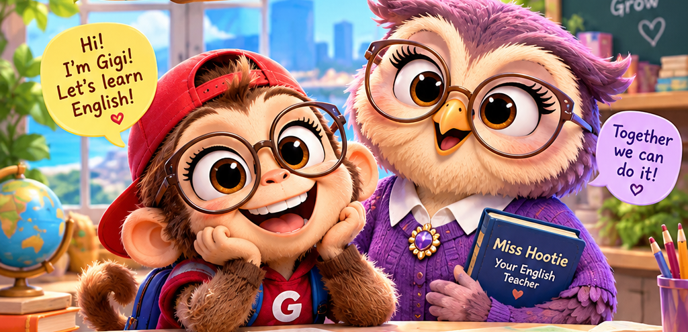

<!doctype html><html lang="tr"><head><meta charset="utf-8"><meta name="viewport" content="width=device-width,initial-scale=1,viewport-fit=cover"><meta name="theme-color" content="#6e3bb0"><title>English with Gigi · Integrated V8</title><style>
:root{--ink:#34244e;--purple:#7650bd;--cream:#fffaf3;--gold:#ffc842;--line:#e8def5}*{box-sizing:border-box}body{margin:0;background:#ece4f9;color:var(--ink);font-family:system-ui,-apple-system,'Segoe UI',sans-serif}button,select{font:inherit}button{cursor:pointer}button:focus-visible,select:focus-visible{outline:3px solid #e88b19;outline-offset:3px}#app{max-width:580px;min-height:100dvh;margin:auto;background:#fbf7ff;box-shadow:0 0 35px #4e2b7522}.top{background:#7043ac;color:white;display:flex;align-items:center;justify-content:space-between;padding:13px 16px;gap:8px;position:sticky;top:0;z-index:5}.brand{font-weight:900;font-size:18px}.top small{font-weight:700}.brand{direction:ltr;unicode-bidi:isolate}[dir=rtl] .top{direction:ltr}[dir=rtl] .top .brand{order:2}[dir=rtl] .top>div:last-child{order:1}[dir=rtl] .footer{direction:rtl}[dir=rtl] .hero .stamp{direction:ltr;unicode-bidi:isolate}.mini{background:#ffffff25;border:1px solid #ffffff55;color:white;border-radius:13px;padding:9px 12px;font-weight:800}.hero{height:210px;overflow:hidden;background:#8cc6f6;position:relative}.hero img{width:100%;height:100%;object-fit:cover;object-position:center 45%;display:block}.hero .stamp{position:absolute;left:12px;bottom:9px;background:#3b215bbd;color:#fff;padding:6px 12px;border-radius:20px;font-weight:850;font-size:13px}.content{padding:18px 17px 92px}.card{background:#fff;border:1px solid var(--line);box-shadow:0 5px 15px #37205b0c;border-radius:22px;padding:20px;margin-bottom:14px}.eyebrow{font-size:12px;font-weight:900;letter-spacing:.07em;color:#8b65bc;text-transform:uppercase}.heading{font-size:25px;line-height:1.17;margin:8px 0 10px;font-weight:900}.sub{color:#70647f;font-size:14px;line-height:1.55}.group{display:flex;flex-wrap:wrap;gap:9px;margin:12px 0 18px}.pill{background:#fff;border:2px solid #e1d5ef;border-radius:15px;padding:12px 14px;color:#4a3367;font-weight:800;flex:1;min-width:95px}.pill.on{background:#eee4ff;border-color:#8152c7;box-shadow:0 0 0 1px #8152c7}.primary{width:100%;border:0;border-radius:16px;background:var(--gold);color:#3e2861;padding:16px 15px;font-weight:900;font-size:17px;box-shadow:0 4px 0 #d8a92d;margin-top:8px}.secondary{width:100%;background:white;border:2px solid #d9c9eb;color:#64409b;border-radius:16px;padding:12px 14px;font-weight:800;margin-top:10px}.ghost{border:0;background:transparent;color:#67449d;padding:8px;font-weight:850}.choices{display:grid;grid-template-columns:1fr 1fr;gap:10px;margin-top:15px}.choice{background:white;border:2px solid #e0d8e9;border-radius:14px;padding:15px 9px;min-height:63px;font-weight:800;color:#38264f;overflow-wrap:anywhere}.choice.correct{background:#e2f6e7;border-color:#259b58}.choice.wrong{background:#ffebed;border-color:#d34e63}.choice:disabled{opacity:1}.progress{height:9px;background:#eae1f2;border-radius:99px;overflow:hidden;margin:13px 0}.progress div{height:100%;background:#8a5aca;transition:width .15s}.feedback{margin-top:15px;padding:14px;background:#f4effb;border-radius:15px;line-height:1.55;font-size:14px}.quote{border-left:4px solid #ad85d8;background:#f6f0fd;padding:11px 13px;border-radius:0 13px 13px 0;margin:10px 0;font-size:14px}.row{display:flex;justify-content:space-between;align-items:center;gap:8px}.lesson{display:block;width:100%;text-align:start;border:2px solid #e5d8f4;background:#fff;padding:16px;border-radius:17px;margin:10px 0;color:var(--ink)}.lesson:disabled{opacity:.5}.level{font-size:12px;font-weight:900;background:#e7dafa;color:#6942a1;padding:5px 10px;border-radius:12px}.footer{position:fixed;bottom:0;left:50%;transform:translateX(-50%);max-width:580px;width:100%;display:flex;background:#fff;border-top:1px solid #eadff6;padding:9px 12px calc(9px + env(safe-area-inset-bottom));gap:5px;z-index:6}.nav{flex:1;border:0;background:transparent;color:#76678b;font-size:12px;font-weight:800;padding:5px 2px}.nav.active{color:#6d40a7}.nav span{display:block;font-size:20px}.tag{display:inline-block;background:#f0e6ff;color:#6740a0;padding:5px 9px;border-radius:9px;font-size:12px;font-weight:900;margin:4px}.lessonText{line-height:1.7;font-size:16px}.notice{background:#fff8df;border:1px solid #f0d78d;border-radius:14px;padding:12px;font-size:13px;margin:12px 0}.muted{color:#766d7d}.question{font-size:19px;font-weight:850;line-height:1.45;margin:15px 0}.result{font-size:46px;font-weight:900;color:#7243ad;text-align:center}.speaker{border:1px solid #d4c3e8;background:#f4eafa;color:#634092;padding:8px 12px;border-radius:12px;font-weight:800;margin:8px 0} [dir=rtl] .lesson{text-align:right}[dir=rtl] .quote{border-left:0;border-right:4px solid #ad85d8;border-radius:13px 0 0 13px} @media(max-width:380px){.hero{height:170px}.content{padding:13px 12px 90px}.card{padding:15px}.brand{font-size:16px}.heading{font-size:22px}.pill{min-width:80px;padding:10px 7px;font-size:13px}.choices{gap:7px}.choice{padding:12px 5px}}@media(prefers-reduced-motion:reduce){*{transition:none!important;animation:none!important}}
@media(max-width:420px){.hero{height:160px}.top{padding:10px 12px}.brand{font-size:15px}.content{padding:12px}.card{padding:16px}}@media(prefers-reduced-motion:reduce){*,*::before,*::after{animation:none!important;transition:none!important}}
/* Kids game mode: keep original hero on home, save vertical space while playing. */
body.kids-game .hero{height:102px;overflow:hidden}body.kids-game .hero img{width:100%;height:100%;object-fit:cover;object-position:center 43%}
body.kids-game .content{padding-top:10px}
body.kids-game .choice.visual-choice{min-height:100px;font-size:44px!important;display:flex;align-items:center;justify-content:center;border-radius:20px}
body.kids-game .choice.visual-choice:focus-visible{outline:3px solid #e88b19}
body.kids-game .game-choices{grid-template-columns:repeat(3,minmax(0,1fr));gap:10px}
body.kids-game .game-feedback{padding:12px;border-radius:14px;background:#f5edff;margin:12px 0;font-weight:650}
body.kids-game .game-feedback.success{background:#e3f6e9}
body.kids-game .game-basket{font-size:29px;text-align:center;padding:12px;background:#fff8e7;border-radius:15px;margin:10px 0}
@media(max-width:420px){body.kids-game .hero{height:86px}body.kids-game .choice.visual-choice{min-height:86px}}
</style></head><body><div id="app"></div><script>
'use strict';
const LANG={tr:{home:'Ana Sayfa',lessons:'Dersler',progress:'İlerleme',settings:'Ayarlar',welcome:'Gigi ile İngilizce öğren!',intro:'Önce açıklama dilini ve yaş grubunu seç. Sonra seviyeni birlikte belirleyelim.',language:'Açıklama dili',age:'Yaş grubu',kids:'Çocuklar · 5–11',teens:'Gençler · 12–17',adults:'Yetişkinler · 18+',start:'Seviye testine başla',resume:'Kaldığım yerden devam et',continue:'Devam et',homeBtn:'Ana sayfaya dön',assessment:'Seviye belirleme',assessmentInfo:'Bu kısa test yaklaşık başlangıç seviyeni önerir; resmî CEFR sertifikası değildir.',question:'Soru',of:'/',listen:'İngilizceyi dinle',right:'Doğru!',wrong:'Birlikte öğrenelim',result:'Önerilen başlangıç seviyesi',score:'Doğru cevap',path:'Ders yolum',begin:'Derslere git',retry:'Testi yeniden yap',lesson:'Ders',practice:'Alıştırma',teacher:'Miss Hootie · Öğretmen',student:'Gigi · Öğrenci',learn:'Önce öğren',goPractice:'Şimdi pratik yap',complete:'Dersi tamamladın!',unlock:'Sonraki ders açıldı',repeat:'Bu dersi yeniden çalış',next:'Sonraki ders',locked:'Önce önceki dersi tamamla',change:'Yaş veya dil değiştir',reset:'İlerlemeyi sıfırla',confirm:'Bütün ilerlemeni silmek istiyor musun?',noPlacement:'Önce seviye testini tamamla.',xp:'Toplam XP',banana:'Muz',correctExplain:'Neden doğru?',notYet:'Bu seviyedeki dersler henüz hazırlanıyor.',notice:'Öğrendiğin İngilizce ifadeler İngilizce kalır; açıklamalar seçtiğin dilde gösterilir.',placementSaved:'Testin kaydedildi.',practiceAgain:'Tekrar dene',levelNote:'Bu, kısa bir ön değerlendirmedir. Özellikle B2–C1 için daha kapsamlı ölçüm gerekir.',answerFirst:'Önce bir cevap seç.',review:'Cevabı ve açıklamayı incele; hazır olunca devam et.',scoreLesson:'Ders başarısı',feedbackCorrect:'Harika! Bu cümleyi doğru kullandın.',feedbackWrong:'Bu ifade için doğru cevap aşağıda. Nedenini inceleyelim.',back:'Geri',lessonReady:'Seviyene uygun dersler',noHearts:'Hata yapmak serbest! Kalpler öğrenmeyi engellemez.'},en:{home:'Home',lessons:'Lessons',progress:'Progress',settings:'Settings',welcome:'Learn English with Gigi!',intro:'Choose your explanation language and age group. Then we will find your starting level.',language:'Explanation language',age:'Age group',kids:'Kids · 5–11',teens:'Teens · 12–17',adults:'Adults · 18+',start:'Start level check',resume:'Resume where I left off',continue:'Continue',homeBtn:'Back to home',assessment:'Level check',assessmentInfo:'This short check suggests a starting level; it is not an official CEFR certification.',question:'Question',of:'/',listen:'Listen in English',right:'Correct!',wrong:'Let’s learn together',result:'Suggested starting level',score:'Correct answers',path:'My lesson path',begin:'Go to lessons',retry:'Retake level check',lesson:'Lesson',practice:'Practice',teacher:'Miss Hootie · Teacher',student:'Gigi · Student',learn:'Learn first',goPractice:'Now practise',complete:'Lesson complete!',unlock:'Next lesson unlocked',repeat:'Practise this lesson again',next:'Next lesson',locked:'Finish the previous lesson first',change:'Change age or language',reset:'Reset progress',confirm:'Delete all your progress?',noPlacement:'Complete the level check first.',xp:'Total XP',banana:'Bananas',correctExplain:'Why?',notYet:'Lessons for this level are still being prepared.',notice:'English expressions stay in English; explanations follow your selected language.',placementSaved:'Your result is saved.',practiceAgain:'Try again',levelNote:'This is a short initial assessment. B2–C1 needs more comprehensive testing.',answerFirst:'Choose an answer first.',review:'Read the explanation, then continue when ready.',scoreLesson:'Lesson accuracy',feedbackCorrect:'Great! You used this expression correctly.',feedbackWrong:'Here is the correct answer. Let’s see why.',back:'Back',lessonReady:'Lessons for your level',noHearts:'Mistakes are welcome! Hearts never block learning.'},he:{home:'בית',lessons:'שיעורים',progress:'התקדמות',settings:'הגדרות',welcome:'לומדים אנגלית עם ג׳יג׳י!',intro:'בחרו שפת הסבר וקבוצת גיל. אחר כך נבדוק את רמת ההתחלה.',language:'שפת ההסבר',age:'קבוצת גיל',kids:'ילדים · 5–11',teens:'נוער · 12–17',adults:'מבוגרים · 18+',start:'התחלת בדיקת רמה',resume:'המשך מהמקום שעצרתי',continue:'המשך',homeBtn:'חזרה לבית',assessment:'בדיקת רמה',assessmentInfo:'בדיקה קצרה זו מציעה רמת התחלה בלבד; היא אינה הסמכת CEFR רשמית.',question:'שאלה',of:'/',listen:'האזנה באנגלית',right:'נכון!',wrong:'נלמד יחד',result:'רמת התחלה מוצעת',score:'תשובות נכונות',path:'מסלול השיעורים שלי',begin:'לשיעורים',retry:'בדיקת רמה מחדש',lesson:'שיעור',practice:'תרגול',teacher:'מיס הוטי · מורה',student:'ג׳יג׳י · תלמידה',learn:'קודם לומדים',goPractice:'עכשיו מתרגלים',complete:'סיימת את השיעור!',unlock:'השיעור הבא נפתח',repeat:'לתרגל שוב',next:'השיעור הבא',locked:'יש לסיים את השיעור הקודם',change:'שינוי גיל או שפה',reset:'איפוס התקדמות',confirm:'למחוק את כל ההתקדמות?',noPlacement:'קודם יש להשלים את בדיקת הרמה.',xp:'סך נקודות',banana:'בננות',correctExplain:'למה?',notYet:'השיעורים לרמה זו עדיין בהכנה.',notice:'הביטויים הנלמדים נשארים באנגלית; ההסברים מוצגים בשפה שנבחרה.',placementSaved:'התוצאה נשמרה.',practiceAgain:'לנסות שוב',levelNote:'זוהי הערכה ראשונית קצרה. רמות B2–C1 דורשות בדיקה מקיפה יותר.',answerFirst:'יש לבחור תשובה.',review:'קראו את ההסבר והמשיכו כשתהיו מוכנים.',scoreLesson:'הצלחה בשיעור',feedbackCorrect:'נהדר! השתמשת בביטוי נכון.',feedbackWrong:'זו התשובה הנכונה. בואו נבין למה.',back:'חזרה',lessonReady:'שיעורים לרמה שלך',noHearts:'מותר לטעות! לבבות לא חוסמים למידה.'}};
const levels=['A1','A2','B1','B2','C1'];
// All question content is author-reviewed, with age-specific scenarios. Translation applies to prompts and explanations, not target English.
const bank={
kids:[
['A1','Your friend says “Hello!” What can you say?',['Hello!','Goodbye!','Sorry!','Good night!'],0,'Hello! is a greeting you can use when you meet a friend.','Arkadaşın “Hello!” diyor. Nasıl karşılık verirsin?','Hello! arkadaşını gördüğünde kullanabileceğin bir selamlaşmadır.','חבר אומר לך “Hello!”. איך עונים?','Hello! היא ברכת שלום לחבר.'],
['A1','Choose the correct sentence about one cat.',['I has a cat.','I have a cat.','I having a cat.','I haves a cat.'],1,'Use have with I.','Bir kedin olduğunu söyleyen doğru cümleyi seç.','I öznesiyle have kullanılır.','בחרו משפט נכון על חתול אחד.','עם I משתמשים ב-have.'],
['A1','Which word means a colour?',['Jump','Happy','Blue','School'],2,'Blue is a colour.','Hangisi bir renk adıdır?','Blue, mavi renk demektir.','איזו מילה היא צבע?','Blue פירושה כחול.'],
['A2','Yesterday Gigi ___ in the park.',['play','played','plays','playing'],1,'Yesterday signals a finished past action; play becomes played.','Gigi dün parkta ___. Boşluğu doldur.','Yesterday geçmiş zamanı gösterir; play fiili played olur.','אתמול ג׳יג׳י ___ בפארק.','Yesterday מציין עבר; play הופך ל-played.'],
['A2','There ___ three bananas on the table.',['is','are','am','be'],1,'Use are with plural things: three bananas.','Masada üç muz var. Doğru kelimeyi seç.','Üç muz çoğuldur, bu yüzden are kullanılır.','יש שלוש בננות על השולחן.','עם שם עצם ברבים משתמשים ב-are.'],
['A2','Gigi is ___ than her little brother.',['tall','taller','tallest','more tall'],1,'For short adjectives, add -er when comparing two.','Gigi küçük kardeşinden daha uzun. Boşluğu doldur.','İki kişiyi karşılaştırırken tall → taller olur.','ג׳יג׳י גבוהה יותר מאחיה הקטן.','בהשוואה בין שניים tall הופך ל-taller.'],
['B1','If it rains, we ___ inside.',['stay','stayed','will stay','staying'],2,'The first conditional uses if + present, then will + verb.','Yağmur yağarsa içeride kalacağız. Doğru seçeneği bul.','Birinci koşulda if + geniş zaman, ardından will + fiil gelir.','אם ירד גשם, נישאר בפנים.','תנאי ראשון: if + הווה, ואז will + פועל.'],
['B1','I have lived here ___ 2022.',['for','since','during','from'],1,'Since introduces the starting point of a period.','2022’den beri burada yaşıyorum. Boşluğu doldur.','Since başlangıç noktasını belirtir: since 2022.','אני גר כאן מאז 2022.','Since מציין נקודת התחלה.'],
['B1','The cake ___ by my sister yesterday.',['made','was made','is make','has make'],1,'Past passive: was/were + past participle.','Pasta dün kız kardeşim tarafından yapıldı.','Geçmiş zaman edilgende was/were + fiilin üçüncü hâli kullanılır.','העוגה הוכנה אתמול על ידי אחותי.','סביל בעבר: was/were + צורת עבר שלישית.'],
['B2','Hardly had we arrived ___ the show began.',['than','when','that','while'],1,'Hardly ... when describes one event immediately following another.','Biz varır varmaz gösteri başladı. Boşluğu doldur.','Hardly ... when yapısı, hemen ardından gerçekleşen olayı anlatır.','כמעט לא הגענו וכבר המופע התחיל.','במבנה Hardly ... when אירוע אחד קורה מיד אחרי האחר.'],
['B2','She suggested ___ earlier.',['to leave','leave','leaving','left'],2,'Suggest is followed by a gerund here: suggested leaving.','Daha erken ayrılmayı önerdi. Doğru yapıyı seç.','Suggest fiilinden sonra burada -ing biçimi gelir.','היא הציעה לצאת מוקדם יותר.','אחרי suggested משתמשים כאן ב-ing.'],
['B2','Despite ___ tired, Gigi finished the puzzle.',['be','being','was','to be'],1,'Despite takes a noun or -ing form, not a finite clause.','Yorgun olmasına rağmen Gigi bulmacayı bitirdi.','Despite ardından isim veya -ing biçimi gelir.','למרות העייפות ג׳יג׳י סיימה את הפאזל.','אחרי Despite משתמשים בשם עצם או בצורת ing.'],
['C1','Had I known, I ___ you sooner.',['would tell','would have told','told','will tell'],1,'Inverted third conditional: Had I known = If I had known.','Bilseydim sana daha önce söylerdim.','Had I known, If I had known ile aynı koşul yapısıdır; would have + V3 gerekir.','אילו ידעתי, הייתי אומר לך קודם.','Had I known הוא תנאי שלישי הפוך; משתמשים ב-would have + V3.'],
['C1','The new rule is unlikely to ___ much difference.',['do','make','take','give'],1,'Make a difference is the standard collocation.','Yeni kuralın pek fark yaratması beklenmiyor.','Make a difference, fark yaratmak anlamında yerleşik bir kalıptır.','לא סביר שהכלל החדש ישנה הרבה.','הצירוף המקובל הוא make a difference.'],
['C1','No sooner had she spoken ___ everyone laughed.',['when','than','then','while'],1,'No sooner ... than links events in immediate succession.','O konuşur konuşmaz herkes güldü.','No sooner ... than, hemen peş peşe gerçekleşen olayları anlatır.','ברגע שדיברה כולם צחקו.','המבנה הוא No sooner ... than.']
],
teens:[
['A1','A new classmate asks your name. Choose a reply.',['I am fine.','My name is Alex.','I am fifteen years.','I name Alex.'],1,'My name is ... introduces your name.','Yeni sınıf arkadaşın adını soruyor. Doğru yanıtı seç.','My name is ... adını söylemek için kullanılır.','תלמיד חדש שואל לשמך.','My name is ... משמש להצגת השם.'],
['A1','Choose the correct sentence about a phone.',['This is my phone.','This my phone.','This are phone.','These is phone.'],0,'This is + singular noun identifies one thing.','Telefonunu gösteriyorsun. Doğru cümleyi seç.','Tek bir nesne için This is kullanılır.','אתם מראים טלפון. בחרו משפט נכון.','עם חפץ יחיד משתמשים ב-This is.'],
['A1','Which word describes a feeling?',['Notebook','Excited','Window','Monday'],1,'Excited describes a feeling.','Hangisi bir duyguyu anlatır?','Excited heyecanlı anlamına gelir.','איזו מילה מתארת רגש?','Excited פירושה נרגש.'],
['A2','I ___ a message to my friend last night.',['send','sent','sending','sends'],1,'Send is irregular: its past form is sent.','Dün gece arkadaşıma mesaj gönderdim.','Send düzensiz fiildir; geçmiş hâli sent olur.','שלחתי הודעה לחבר אתמול בלילה.','צורת העבר של send היא sent.'],
['A2','She is interested ___ music.',['on','at','in','for'],2,'Interested in is the correct collocation.','O müzikle ilgileniyor. Boşluğu doldur.','Doğru kalıp interested in şeklindedir.','היא מתעניינת במוזיקה.','הצירוף הוא interested in.'],
['A2','This game is ___ than that one.',['interesting','more interesting','most interesting','interestingly'],1,'Long adjectives often use more in comparisons.','Bu oyun diğerinden daha ilginç.','Interesting gibi uzun sıfatlarla karşılaştırmada more kullanılır.','המשחק הזה מעניין יותר מהשני.','עם תארים ארוכים משתמשים ב-more.'],
['B1','If I ___ more time, I would join the club.',['have','had','will have','having'],1,'Second conditional: if + past simple, would + base verb.','Daha çok zamanım olsaydı kulübe katılırdım.','İkinci koşul: if + geçmiş zaman, would + fiil.','אילו היה לי יותר זמן הייתי מצטרף למועדון.','תנאי שני: if + עבר, would + פועל.'],
['B1','I have been studying ___ two hours.',['since','for','from','during'],1,'For describes a duration; since a starting point.','İki saattir ders çalışıyorum.','For süre belirtir: for two hours.','אני לומד כבר שעתיים.','For מציין משך זמן.'],
['B1','The video ___ over a million times.',['has watched','has been watched','have watched','is watching'],1,'Present perfect passive: has been + past participle.','Video bir milyondan fazla kez izlendi.','Present perfect edilgen: has been + fiilin üçüncü hâli.','הסרטון נצפה יותר ממיליון פעמים.','סביל בהווה מושלם: has been + צורה שלישית.'],
['B2','Not only ___ the test, but she also won a prize.',['she passed','did she pass','she did pass','passed she'],1,'After fronted Not only, invert the auxiliary and subject.','Sınavı geçmekle kalmadı, ödül de kazandı.','Cümle başında Not only varsa yardımcı fiil özneden önce gelir.','לא רק שעברה את המבחן אלא גם זכתה בפרס.','אחרי Not only בתחילת משפט יש היפוך סדר.'],
['B2','I wish I ___ more carefully before posting.',['think','had thought','have thought','will think'],1,'Wish + past perfect expresses regret about the past.','Keşke paylaşmadan önce daha dikkatli düşünseydim.','Geçmiş pişmanlıkta wish + past perfect kullanılır.','הלוואי שהייתי חושב היטב לפני הפרסום.','חרטה על העבר: wish + past perfect.'],
['B2','The article is worth ___.',['read','to read','reading','reads'],2,'Worth is followed by -ing.','Bu makale okunmaya değer.','Worth sözcüğünden sonra -ing kullanılır.','כדאי לקרוא את המאמר.','אחרי worth משתמשים ב-ing.'],
['C1','Were it not for your help, I ___ finished.',['would not have','will not have','had not','did not'],0,'Were it not for ... is a formal conditional structure.','Yardımın olmasaydı bitiremezdim.','Were it not for resmî koşul yapısıdır; sonuç would not have + V3 olur.','ללא עזרתך לא הייתי מסיים.','Were it not for הוא מבנה תנאי רשמי.'],
['C1','The evidence lends ___ to her argument.',['supportive','credence','believe','credible'],1,'Lend credence to means make a claim more believable.','Kanıtlar onun savını daha inandırıcı kılıyor.','Lend credence to, bir iddiayı daha inandırıcı kılmak demektir.','הראיות מחזקות את הטיעון שלה.','Lend credence to פירושו לחזק אמינות טענה.'],
['C1','Scarcely had the concert started ___ the lights went out.',['than','when','that','until'],1,'Scarcely ... when expresses immediate succession.','Konser başlar başlamaz ışıklar söndü.','Scarcely ... when kalıbı hemen ardından olan bir olayı anlatır.','ההופעה בקושי התחילה והאורות כבו.','Scarcely ... when מתאר רצף מיידי.']
],
adults:[
['A1','At a café, how do you ask for water politely?',['Water now.','I want water you.','Water is me.','Can I have some water, please?'],3,'Can I have ... please? is a polite request.','Kafede kibarca nasıl su istersin?','Can I have ... please? kibarca bir şey istemek için kullanılır.','איך מבקשים מים בנימוס בבית קפה?','Can I have ... please? היא בקשה מנומסת.'],
['A1','At a hotel, choose the correct sentence.',['I have a reservation.','I has reservation.','I am reservation.','I reservation have.'],0,'I have a reservation is the standard check-in phrase.','Otelde rezervasyonun olduğunu nasıl söylersin?','I have a reservation, otelde kullanılan doğru kalıptır.','איך אומרים שיש לך הזמנה במלון?','I have a reservation הוא ביטוי מקובל.'],
['A1','Which word means a place to work?',['Office','Breakfast','Tuesday','Quickly'],0,'Office means a workplace or work room.','Hangisi iş yeri anlamına gelir?','Office ofis, iş yeri demektir.','איזו מילה היא מקום עבודה?','Office פירושה משרד.'],
['A2','I ___ the client yesterday.',['call','called','calling','calls'],1,'Yesterday calls for past simple: called.','Dün müşteriyi aradım.','Yesterday geçmiş zaman gerektirir: called.','התקשרתי ללקוח אתמול.','Yesterday דורש עבר פשוט: called.'],
['A2','Could you tell me where the station ___?',['are','is','be','does'],1,'An indirect question uses statement word order: where the station is.','İstasyonun nerede olduğunu soruyorsun.','Dolaylı soruda düz cümle sırası kullanılır: where the station is.','איך שואלים היכן התחנה?','בשאלה עקיפה הסדר הוא where the station is.'],
['A2','This route is ___ than the other one.',['fast','faster','fastest','more fast'],1,'Fast becomes faster when comparing two routes.','Bu rota diğerinden daha hızlı.','İki rotayı karşılaştırırken fast → faster olur.','המסלול הזה מהיר יותר מהשני.','בהשוואה fast הופך ל-faster.'],
['B1','If the meeting ends early, I ___ you.',['called','will call','calling','had called'],1,'First conditional: if + present, will + verb.','Toplantı erken biterse seni arayacağım.','Birinci koşul: if + geniş zaman, will + fiil.','אם הפגישה תסתיים מוקדם אתקשר אליך.','תנאי ראשון: if + הווה, will + פועל.'],
['B1','I have worked here ___ five years.',['since','for','during','from'],1,'For introduces a length of time.','Beş yıldır burada çalışıyorum.','For süre belirtir; for five years.','אני עובד כאן כבר חמש שנים.','For מציין משך זמן.'],
['B1','The report ___ yesterday.',['was sent','has send','is sending','were sent'],0,'Past passive with singular report: was sent.','Rapor dün gönderildi.','Tekil özneyle geçmiş edilgen: was sent.','הדוח נשלח אתמול.','סביל בעבר עם יחיד: was sent.'],
['B2','I would rather you ___ the contract first.',['read','will read','reading','to read'],0,'Would rather + person + past simple expresses a preference about now or future.','Sözleşmeyi önce okumanı tercih ederim.','Would rather + kişi + geçmiş zaman, şimdiki/gelecek tercih için kullanılır.','הייתי מעדיף שתקרא קודם את החוזה.','Would rather + אדם + עבר פשוט מבטא העדפה.'],
['B2','The proposal is subject ___ approval.',['for','with','to','at'],2,'Subject to approval is a fixed formal phrase.','Teklif onaya tabidir.','Doğru resmî kalıp subject to approval şeklindedir.','ההצעה כפופה לאישור.','הצירוף המקובל הוא subject to approval.'],
['B2','She denied ___ the document.',['to sign','sign','signing','signed'],2,'Deny is followed by a gerund: denied signing.','Belgeyi imzaladığını inkâr etti.','Deny fiilinden sonra -ing biçimi gelir.','היא הכחישה שחתמה על המסמך.','אחרי denied משתמשים ב-ing.'],
['C1','Had we anticipated the delay, we ___ earlier.',['leave','would leave','would have left','will leave'],2,'Inverted third conditional takes would have + past participle.','Gecikmeyi öngörseydik daha erken çıkardık.','Devrik üçüncü koşulda would have + fiilin üçüncü hâli gerekir.','אילו ציפינו לעיכוב היינו יוצאים מוקדם יותר.','תנאי שלישי הפוך: would have + צורה שלישית.'],
['C1','The findings call ___ a thorough review.',['in','for','at','with'],1,'Call for means require or demand.','Bulgular kapsamlı inceleme gerektiriyor.','Call for, gerektirmek veya talep etmek demektir.','הממצאים מחייבים בדיקה מעמיקה.','Call for פירושו לדרוש או לחייב.'],
['C1','Under no circumstances ___ confidential data be shared.',['should','it should','should it','would it'],0,'With under no circumstances at the start, use auxiliary–subject inversion: should confidential data ...','Gizli veriler hiçbir koşulda paylaşılmamalıdır.','Cümle başındaki olumsuz zarf sonrası yardımcı fiil öne gelir: should confidential data ...','בשום מצב אין לשתף מידע סודי.','אחרי Under no circumstances יש היפוך: should confidential data ...']
]};
const lessonThemes={kids:[['Hello, friend!','My favourite things'],['Yesterday at the park','Let’s compare'],['If it rains','My story so far'],['Amazing sentences','Explaining ideas'],['What if?','Words that belong together']],teens:[['Meet a classmate','My school day'],['Messages and plans','Comparing games'],['What would you do?','My experiences'],['Online discussions','Giving opinions'],['Expressing possibilities','Advanced expressions']],adults:[['At the hotel','At the café'],['Travel directions','At work'],['Making plans','Work experience'],['Professional requests','Sharing opinions'],['Complex situations','Precise expressions']]};
// A lesson uses a distinct four-question rotation from the age-specific level bank, with an introduction and explanatory feedback.
const storeKey='gigi_integrated_v7';function load(){try{return JSON.parse(localStorage.getItem(storeKey))||{}}catch(e){return {}}}
let saved=load();let state={lang:saved.lang||'tr',age:saved.age||'kids',level:saved.level||null,finished:saved.finished||{},xp:saved.xp||0,bananas:saved.bananas||0,view:'home',mode:null,index:0,answers:[],selected:null,phase:'question',lessonId:null,lessonStage:'intro',pending:saved.pending||null};
function save(){try{localStorage.setItem(storeKey,JSON.stringify({lang:state.lang,age:state.age,level:state.level,finished:state.finished,xp:state.xp,bananas:state.bananas,pending:state.pending}))}catch(e){}}
const t=k=>LANG[state.lang][k]||k;const el=id=>document.getElementById(id);const esc=s=>String(s).replace(/[&<>"']/g,c=>({'&':'&amp;','<':'&lt;','>':'&gt;','"':'&quot;',"'":'&#39;'}[c]));
function questionObj(r){return {level:r[0],english:r[1],options:r[2],correct:r[3],explain:{en:r[4],tr:r[6],he:r[8]},prompt:{en:r[1],tr:r[5],he:r[7]}}}
const kidAgeBanks={"5-7": [["A1", "Which one is a colour?", ["Blue", "Cat", "Run", "Book"], 0, "Blue names a colour.", "Hangisi bir renk?", "Blue = mavi.", "Hangisi bir renk?", "Blue = mavi."], ["A1", "What do you say when you meet a friend?", ["Hello!", "Good night!", "Goodbye!", "Sorry!"], 0, "Hello is a greeting.", "Arkadaşını görünce ne dersin?", "Hello = Merhaba.", "Arkadaşını görünce ne dersin?", "Hello = Merhaba."], ["A1", "Which animal says meow?", ["Cat", "Dog", "Bird", "Fish"], 0, "A cat says meow.", "Hangi hayvan miyavlar?", "Cat = kedi.", "Hangi hayvan miyavlar?", "Cat = kedi."], ["A2", "Choose the number three.", ["One", "Two", "Three", "Four"], 2, "Three means 3.", "Üç sayısı hangisi?", "Three = üç.", "Üç sayısı hangisi?", "Three = üç."], ["A2", "What is this? 🍎", ["Apple", "Banana", "Orange", "Grape"], 0, "An apple is the fruit shown.", "Bu meyvenin İngilizcesi ne?", "Apple = elma.", "Bu meyvenin İngilizcesi ne?", "Apple = elma."], ["A2", "I am ___.", ["happy", "table", "jump", "school"], 0, "Happy describes a feeling.", "Mutluyum demek için hangi kelime?", "Happy = mutlu.", "Mutluyum demek için hangi kelime?", "Happy = mutlu."], ["B1", "Choose the correct sentence.", ["I like cats.", "I likes cats.", "I liking cats.", "I am like cats."], 0, "I like cats is grammatical.", "Kedileri seviyorum demenin doğru yolu?", "I ile like kullanılır.", "Kedileri seviyorum demenin doğru yolu?", "I ile like kullanılır."], ["B1", "Where is the ball? It is ___ the box.", ["in", "blue", "happy", "three"], 0, "In expresses being inside.", "Top kutunun içinde. Hangi kelime?", "In = içinde.", "Top kutunun içinde. Hangi kelime?", "In = içinde."], ["B1", "She ___ a dog.", ["has", "have", "having", "haves"], 0, "She takes has.", "Onun bir köpeği var. Boşluğu doldur.", "She ile has kullanılır.", "Onun bir köpeği var. Boşluğu doldur.", "She ile has kullanılır."], ["B2", "Yesterday I ___ to the park.", ["went", "go", "going", "goes"], 0, "Went is the past of go.", "Dün parka gittim. Boşluğu doldur.", "Go fiilinin geçmiş hâli went.", "Dün parka gittim. Boşluğu doldur.", "Go fiilinin geçmiş hâli went."], ["B2", "Which question asks about a place?", ["Where are you?", "How old are you?", "What is your name?", "Are you happy?"], 0, "Where asks about a place.", "Hangi soru bir yer soruyor?", "Where = nerede.", "Hangi soru bir yer soruyor?", "Where = nerede."], ["B2", "We ___ playing now.", ["are", "is", "am", "be"], 0, "We are playing is correct.", "Şimdi oynuyoruz. Boşluğu doldur.", "We ile are kullanılır.", "Şimdi oynuyoruz. Boşluğu doldur.", "We ile are kullanılır."], ["C1", "If it rains, I ___ at home.", ["will stay", "stayed", "staying", "stays"], 0, "Will stay expresses the future result.", "Yağmur yağarsa evde kalacağım.", "If + geniş zaman ardından will gelebilir.", "Yağmur yağarsa evde kalacağım.", "If + geniş zaman ardından will gelebilir."], ["C1", "I have ___ my homework.", ["finished", "finish", "finishing", "finishes"], 0, "Have finished is present perfect.", "Ödevimi bitirdim.", "Have ardından past participle gelir.", "Ödevimi bitirdim.", "Have ardından past participle gelir."], ["C1", "She is taller ___ me.", ["than", "then", "that", "when"], 0, "Than is used for comparisons.", "O benden daha uzun.", "Karşılaştırmalarda than kullanılır.", "O benden daha uzun.", "Karşılaştırmalarda than kullanılır."]], "8-9": [["A1", "I ___ eight years old.", ["am", "is", "are", "be"], 0, "Use am with I.", "Sekiz yaşındayım.", "I ile am kullanılır.", "Sekiz yaşındayım.", "I ile am kullanılır."], ["A1", "Which word is an animal?", ["Rabbit", "Yellow", "Run", "Happy"], 0, "Rabbit names an animal.", "Hangisi bir hayvan?", "Rabbit = tavşan.", "Hangisi bir hayvan?", "Rabbit = tavşan."], ["A1", "What is the opposite of big?", ["Small", "Tall", "Fast", "Long"], 0, "Small is the opposite of big.", "Big kelimesinin zıttı hangisi?", "Small = küçük.", "Big kelimesinin zıttı hangisi?", "Small = küçük."], ["A2", "Choose the number three.", ["One", "Two", "Three", "Four"], 2, "Three means 3.", "Üç sayısı hangisi?", "Three = üç.", "Üç sayısı hangisi?", "Three = üç."], ["A2", "What is this? 🍎", ["Apple", "Banana", "Orange", "Grape"], 0, "An apple is the fruit shown.", "Bu meyvenin İngilizcesi ne?", "Apple = elma.", "Bu meyvenin İngilizcesi ne?", "Apple = elma."], ["A2", "I am ___.", ["happy", "table", "jump", "school"], 0, "Happy describes a feeling.", "Mutluyum demek için hangi kelime?", "Happy = mutlu.", "Mutluyum demek için hangi kelime?", "Happy = mutlu."], ["B1", "Choose the correct sentence.", ["I like cats.", "I likes cats.", "I liking cats.", "I am like cats."], 0, "I like cats is grammatical.", "Kedileri seviyorum demenin doğru yolu?", "I ile like kullanılır.", "Kedileri seviyorum demenin doğru yolu?", "I ile like kullanılır."], ["B1", "Where is the ball? It is ___ the box.", ["in", "blue", "happy", "three"], 0, "In expresses being inside.", "Top kutunun içinde. Hangi kelime?", "In = içinde.", "Top kutunun içinde. Hangi kelime?", "In = içinde."], ["B1", "She ___ a dog.", ["has", "have", "having", "haves"], 0, "She takes has.", "Onun bir köpeği var. Boşluğu doldur.", "She ile has kullanılır.", "Onun bir köpeği var. Boşluğu doldur.", "She ile has kullanılır."], ["B2", "Yesterday I ___ to the park.", ["went", "go", "going", "goes"], 0, "Went is the past of go.", "Dün parka gittim. Boşluğu doldur.", "Go fiilinin geçmiş hâli went.", "Dün parka gittim. Boşluğu doldur.", "Go fiilinin geçmiş hâli went."], ["B2", "Which question asks about a place?", ["Where are you?", "How old are you?", "What is your name?", "Are you happy?"], 0, "Where asks about a place.", "Hangi soru bir yer soruyor?", "Where = nerede.", "Hangi soru bir yer soruyor?", "Where = nerede."], ["B2", "We ___ playing now.", ["are", "is", "am", "be"], 0, "We are playing is correct.", "Şimdi oynuyoruz. Boşluğu doldur.", "We ile are kullanılır.", "Şimdi oynuyoruz. Boşluğu doldur.", "We ile are kullanılır."], ["C1", "If it rains, I ___ at home.", ["will stay", "stayed", "staying", "stays"], 0, "Will stay expresses the future result.", "Yağmur yağarsa evde kalacağım.", "If + geniş zaman ardından will gelebilir.", "Yağmur yağarsa evde kalacağım.", "If + geniş zaman ardından will gelebilir."], ["C1", "I have ___ my homework.", ["finished", "finish", "finishing", "finishes"], 0, "Have finished is present perfect.", "Ödevimi bitirdim.", "Have ardından past participle gelir.", "Ödevimi bitirdim.", "Have ardından past participle gelir."], ["C1", "She is taller ___ me.", ["than", "then", "that", "when"], 0, "Than is used for comparisons.", "O benden daha uzun.", "Karşılaştırmalarda than kullanılır.", "O benden daha uzun.", "Karşılaştırmalarda than kullanılır."]], "10-11": [["A1", "Choose the correct sentence.", ["I have a cat.", "I has a cat.", "I having cat.", "I haves a cat."], 0, "Use have with I.", "Doğru cümleyi seç.", "I ile have kullanılır.", "Doğru cümleyi seç.", "I ile have kullanılır."], ["A1", "What does usually mean?", ["Most days", "Yesterday", "Never", "Only once"], 0, "Usually means most of the time.", "Usually ne demek?", "Usually = genellikle.", "Usually ne demek?", "Usually = genellikle."], ["A1", "Choose a polite request.", ["Can I have water, please?", "Give water now.", "Water you.", "I water can."], 0, "Can I ... please? is polite.", "Kibar bir isteği seç.", "Can I ... please? kibar bir kalıptır.", "Kibar bir isteği seç.", "Can I ... please? kibar bir kalıptır."], ["A2", "Choose the number three.", ["One", "Two", "Three", "Four"], 2, "Three means 3.", "Üç sayısı hangisi?", "Three = üç.", "Üç sayısı hangisi?", "Three = üç."], ["A2", "What is this? 🍎", ["Apple", "Banana", "Orange", "Grape"], 0, "An apple is the fruit shown.", "Bu meyvenin İngilizcesi ne?", "Apple = elma.", "Bu meyvenin İngilizcesi ne?", "Apple = elma."], ["A2", "I am ___.", ["happy", "table", "jump", "school"], 0, "Happy describes a feeling.", "Mutluyum demek için hangi kelime?", "Happy = mutlu.", "Mutluyum demek için hangi kelime?", "Happy = mutlu."], ["B1", "Choose the correct sentence.", ["I like cats.", "I likes cats.", "I liking cats.", "I am like cats."], 0, "I like cats is grammatical.", "Kedileri seviyorum demenin doğru yolu?", "I ile like kullanılır.", "Kedileri seviyorum demenin doğru yolu?", "I ile like kullanılır."], ["B1", "Where is the ball? It is ___ the box.", ["in", "blue", "happy", "three"], 0, "In expresses being inside.", "Top kutunun içinde. Hangi kelime?", "In = içinde.", "Top kutunun içinde. Hangi kelime?", "In = içinde."], ["B1", "She ___ a dog.", ["has", "have", "having", "haves"], 0, "She takes has.", "Onun bir köpeği var. Boşluğu doldur.", "She ile has kullanılır.", "Onun bir köpeği var. Boşluğu doldur.", "She ile has kullanılır."], ["B2", "If I study, I ___ better.", ["will learn", "learned", "learning", "learns"], 0, "Will learn is the future result.", "Çalışırsam daha iyi öğreneceğim.", "If + present, will + fiil.", "Çalışırsam daha iyi öğreneceğim.", "If + present, will + fiil."], ["B2", "I have lived here ___ 2022.", ["since", "for", "during", "by"], 0, "Since marks a starting point.", "2022’den beri burada yaşıyorum.", "Since başlangıç tarihini belirtir.", "2022’den beri burada yaşıyorum.", "Since başlangıç tarihini belirtir."], ["B2", "Which sentence is in the past?", ["We played yesterday.", "We play every day.", "We will play.", "We are playing."], 0, "Played is past tense.", "Hangisi geçmiş zamanı anlatıyor?", "Played geçmiş zamandır.", "Hangisi geçmiş zamanı anlatıyor?", "Played geçmiş zamandır."], ["C1", "I wish I ___ more time.", ["had", "have", "will have", "having"], 0, "Wish + past expresses an unreal present.", "Keşke daha çok zamanım olsaydı.", "Wish sonrası hayali durum için had kullanılır.", "Keşke daha çok zamanım olsaydı.", "Wish sonrası hayali durum için had kullanılır."], ["C1", "The book ___ by my sister.", ["was written", "wrote", "is write", "writing"], 0, "Was written is past passive.", "Kitap kız kardeşim tarafından yazıldı.", "Edilgen yapıda was written kullanılır.", "Kitap kız kardeşim tarafından yazıldı.", "Edilgen yapıda was written kullanılır."], ["C1", "Despite ___ tired, she smiled.", ["being", "be", "was", "to be"], 0, "Despite takes the -ing form here.", "Yorgun olmasına rağmen gülümsedi.", "Despite ardından -ing kullanılabilir.", "Yorgun olmasına rağmen gülümsedi.", "Despite ardından -ing kullanılabilir."]]};
let kidAge=localStorage.getItem('gigiKidAge')||'5-7';
function ageQuestions(){return (state.age==='kids'?kidAgeBanks[kidAge]:bank[state.age]).map(questionObj)}
function selectKidAge(v){if(!kidAgeBanks[v])return;if(kidAge!==v){kidAge=v;localStorage.setItem('gigiKidAge',v);state.level=null;state.pending=null;state.finished={};save()}render()}

// Localized kids interface: English teaching expressions are deliberately unchanged.
const kidUI={
 tr:{ageTitle:'Çocuğun yaşı',ageSuffix:'yaş',adventures:'🎮 Gigi Kids · 8 Macera',adventureHeading:'🐒 Gigi Çocuk Maceraları',learn:'Öğren',findAnimal:'Hayvanı bul!',match:'Resimle kelimeyi eşleştir!',spell:'Kelimeyi oluştur!',findColor:'Rengi bul!',shop:'Listedeki iki ürünü satın al!',sequence:'Önce, sonra, en son!',talk:'Miss Hootie ile konuş!',feel:'Gigi nasıl hissediyor?',feedback:'Resimlere bak ve doğru cevabı seç!',basket:'Resimlere bak ve sepeti doldur!',goodMatch:'Harika eşleşme!',tryPair:'Başka bir çift dene!',perfect:'Harika yazdın!',tryAgain:'Tekrar dene!',correct:'Harika! Doğru cevap!',wrong:'Bir daha deneyelim!',done:'Tamamlandı!'},
 en:{ageTitle:"Child's age",ageSuffix:'ages',adventures:'🎮 Gigi Kids · 8 Adventures',adventureHeading:'🐒 Gigi Kids Adventures',learn:'Learn',findAnimal:'Find the animal!',match:'Match the picture and word!',spell:'Build the word!',findColor:'Find the color!',shop:'Buy the two things on the list!',sequence:'First, next, last!',talk:'Talk to Miss Hootie!',feel:'How does Gigi feel?',feedback:'Look at the pictures and choose!',basket:'Look at the pictures and fill the basket!',goodMatch:'Great match!',tryPair:'Try another pair!',perfect:'Perfect spelling!',tryAgain:'Try again!',correct:'Great job!',wrong:'Let’s try again!',done:'Completed!'},
 he:{ageTitle:'גיל הילד',ageSuffix:'גילאי',adventures:'🎮 Gigi Kids · 8 הרפתקאות',adventureHeading:'🐒 ההרפתקאות של ג׳יג׳י',learn:'לומדים',findAnimal:'מצאו את החיה!',match:'התאימו תמונה למילה!',spell:'בנו את המילה!',findColor:'מצאו את הצבע!',shop:'קנו את שני המוצרים ברשימה!',sequence:'קודם, אחר כך, בסוף!',talk:'מדברים עם מיס הוטי!',feel:'איך ג׳יג׳י מרגישה?',feedback:'הסתכלו בתמונות ובחרו!',basket:'הסתכלו בתמונות ומלאו את הסל!',goodMatch:'התאמה מצוינת!',tryPair:'נסו זוג אחר!',perfect:'איות מצוין!',tryAgain:'נסו שוב!',correct:'כל הכבוד!',wrong:'ננסה שוב!',done:'הושלם!'}
};
function ku(key){return (kidUI[state.lang]||kidUI.en)[key]||kidUI.en[key]||key}
function ageLabel(v){return state.lang==='he'?`גילאי <bdi dir="ltr">${v}</bdi>`:state.lang==='en'?`Ages ${v}`:`${v} yaş`}
const gameIntroKeys=['findAnimal','match','spell','findColor','shop','sequence','talk','feel'];
function adventureIntro(i){return ku(gameIntroKeys[i])}
function translatedWord(w){const he={'Ayı':'דוב','Tilki':'שועל','Panda':'פנדה','Timsah':'תנין','Su aygırı':'היפופוטם','Papağan':'תוכי','Pembe':'ורוד','Siyah':'שחור','Beyaz':'לבן','Kahverengi':'חום','Yumurta':'ביצה','Su':'מים','Portakal':'תפוז','Pirinç':'אורז','Heyecanlı':'נרגש','Kızgın':'כועס','Şaşırmış':'מופתע','Uykulu':'מנומנם','Aslan':'אריה','Fil':'פיל','Zürafa':'ג׳ירפה','Zebra':'זברה','Maymun':'קוף','Kaplan':'טיגריס','Penguen':'פינגווין','Yunus':'דולפין','Kaplumbağa':'צב','Ahtapot':'תמנון','Balina':'לווייתן','Yengeç':'סרטן','İnek':'פרה','Domuz':'חזיר','Ördek':'ברווז','Tavuk':'תרנגולת','Koyun':'כבשה','Kırmızı':'אדום','Mavi':'כחול','Sarı':'צהוב','Yeşil':'ירוק','Turuncu':'כתום','Mor':'סגול','Elma':'תפוח','Muz':'בננה','Süt':'חלב','Ekmek':'לחם','Peynir':'גבינה','Havuç':'גזר','Domates':'עגבנייה','Merhaba':'שלום','Benim adım Gigi.':'קוראים לי ג׳יג׳י','Mutluyum':'אני שמחה','Ben de memnun oldum':'נעים להכיר גם אותך','Hoşça kal':'להתראות','Mutlu':'שמח','Üzgün':'עצוב','Aç':'רעב','Yorgun':'עייף','Korkmuş':'מפוחד'};
return state.lang==='tr'?w:state.lang==='he'?(he[w]||w):''}
function kidAgeSelector(){return state.age==='kids'?'<h3>'+ku('ageTitle')+'</h3><div class="group">'+['5-7','8-9','10-11'].map(v=>'<button class="pill '+(kidAge===v?'on':'')+'" data-kidage="'+v+'">'+ageLabel(v)+'</button>').join('')+'</div>':''}
function bindKidAge(){document.querySelectorAll('[data-kidage]').forEach(b=>b.onclick=()=>selectKidAge(b.dataset.kidage))}

function shell(content){document.documentElement.lang=state.lang;document.documentElement.dir=state.lang==='he'?'rtl':'ltr';el('app').innerHTML=`<div class="top"><div class="brand">🐒 English with Gigi</div><div><small>⭐ ${state.xp} &nbsp; 🍌 ${state.bananas}</small> <button class="mini" id="settingsTop" type="button" aria-label="${esc(t('settings'))}">⚙️</button> <button class="mini" id="homeTop" aria-label="${esc(t('homeBtn'))}">⌂</button></div></div><div class="hero"><div class="stamp">🐒 Gigi · 🦉 Miss Hootie</div></div><div class="content">${content}</div><div class="footer">${[['home','⌂'],['lessons','📚'],['progress','📈'],['settings','⚙️']].map(([v,icon])=>`<button class="nav ${state.view===v?'active':''}" data-nav="${v}"><span>${icon}</span>${esc(t(v))}</button>`).join('')}</div>`;el('homeTop').onclick=()=>navigate('home');el('settingsTop').onclick=()=>navigate('settings');document.querySelectorAll('[data-nav]').forEach(b=>b.onclick=()=>navigate(b.dataset.nav));}
function navigate(v){playEffect('tap');if('speechSynthesis' in window)window.speechSynthesis.cancel();state.view=v;state.selected=null;state.phase='question';state.mode=null;render();}
function setLanguage(l){state.lang=l;save();render()}function setAge(a){if(state.age!==a){state.age=a;state.level=null;state.pending=null;state.finished={};save()}render()}
function home(){shell(`<div class="card"><div class="eyebrow">Gigi Kids · 3 Age Paths · 24 Adventures · Storybooks</div><h1 class="heading">${t('welcome')}</h1><p class="sub">${t('intro')}</p><h3>${t('language')}</h3><div class="group">${[['tr','🇹🇷 Türkçe'],['en','🇬🇧 English'],['he','🇮🇱 עברית']].map(([l,n])=>`<button class="pill ${state.lang===l?'on':''}" data-lang="${l}">${n}</button>`).join('')}</div><h3>${t('age')}</h3><div class="group">${['kids'].map(a=>`<button class="pill ${state.age===a?'on':''}" data-age="${a}">${t(a)}</button>`).join('')}</div>${kidAgeSelector()}<div class="notice">${t('notice')}</div><button class="primary" id="kidsAdventures">${ku('adventures')}</button>${state.pending?`<button class="primary" id="resume">${t('resume')}</button>`:''}<button class="primary" id="start">${state.level?t('retry'):t('start')}</button>${state.level?`<button class="secondary" id="goLessons">${t('lessonReady')} · ${state.level}</button>`:''}</div>`);document.querySelectorAll('[data-lang]').forEach(b=>b.onclick=()=>setLanguage(b.dataset.lang));document.querySelectorAll('[data-age]').forEach(b=>b.onclick=()=>setAge(b.dataset.age));el('kidsAdventures').onclick=()=>navigate('kidsGames');el('start').onclick=()=>startAssessment();if(el('resume'))el('resume').onclick=resume;if(el('goLessons'))el('goLessons').onclick=()=>navigate('lessons')}
function startAssessment(){playEffect('tap');state.view='quiz';state.mode='assessment';state.index=0;state.answers=[];state.selected=null;state.phase='question';state.pending={mode:'assessment',index:0,answers:[],age:state.age};save();render()}
function resume(){const p=state.pending;if(!p||p.age!==state.age){startAssessment();return}state.view='quiz';state.mode=p.mode;state.index=p.index;state.answers=p.answers||[];state.lessonId=p.lessonId||null;state.lessonStage=p.lessonStage||'practice';state.phase='question';state.selected=null;render()}
function assessmentLevel(answers){const qs=ageQuestions();let highest=0;for(let k=0;k<5;k++){const slice=answers.slice(k*3,k*3+3);const correct=slice.filter((a,j)=>a===qs[k*3+j].correct).length;if(correct>=2)highest=k+1;else break}return levels[Math.min(4,Math.max(0,highest===0?0:highest-1))]}
function quizQuestions(){if(state.mode==='assessment')return ageQuestions();let k=levels.indexOf(state.lessonId.split(':')[0]);let part=Number(state.lessonId.split(':')[1]);const subset=ageQuestions().filter(q=>q.level===levels[k]);return part===0?[subset[0],subset[1],subset[2]]:[subset[1],subset[2],subset[0]]}
function quiz(){let qs=quizQuestions();if(state.index>=qs.length){finishQuiz();return}let q=qs[state.index];let progress=Math.round(state.index/qs.length*100);let isTest=state.mode==='assessment';let visual=(q.english.match(/[\u{1F300}-\u{1FAFF}]/gu)||[]).join(' ');let help=state.lang==='en'?'':`<div class="sub" style="margin-top:9px">${esc(q.prompt[state.lang])}</div>`;shell(`<div class="card"><div class="row"><span class="level">${isTest?t('assessment'):t('lesson')+' '+esc(state.lessonId)}</span><button class="ghost" id="backHome">⌂ ${t('homeBtn')}</button></div><div class="progress"><div style="width:${progress}%"></div></div><div class="sub">${t('question')} ${state.index+1} ${t('of')} ${qs.length}</div><div class="quote">🦉 ${t('teacher')}</div><div class="question" dir="ltr" style="unicode-bidi:isolate">${esc(q.english)}</div>${help}${visual?`<div style="text-align:center;font-size:64px;margin:12px 0" aria-label="Picture clue">${visual}</div>`:''}<button class="speaker" id="speak">🔊 ${t('listen')}</button><div class="choices">${q.options.map((v,i)=>`<button class="choice" data-answer="${i}">${esc(v)}</button>`).join('')}</div><div id="fb"></div></div>`);el('backHome').onclick=()=>navigate('home');el('speak').onclick=()=>{playEffect('tap');speak(q.english)};document.querySelectorAll('[data-answer]').forEach(b=>b.onclick=()=>answer(Number(b.dataset.answer)))}

function speak(text){if(!('speechSynthesis'in window))return;window.speechSynthesis.cancel();let u=new SpeechSynthesisUtterance(text);u.lang='en-US';u.rate=.88;window.speechSynthesis.speak(u)}
function answer(a){if(state.phase==='feedback')return;let q=quizQuestions()[state.index];state.selected=a;state.phase='feedback';state.answers[state.index]=a;const correct=a===q.correct;playEffect(correct?'correct':'wrong');let assessment=state.mode==='assessment';document.querySelectorAll('[data-answer]').forEach(b=>{b.disabled=true;let n=Number(b.dataset.answer);if(!assessment){if(n===q.correct)b.classList.add('correct');else if(n===a)b.classList.add('wrong')}else if(n===a)b.classList.add('on')});let reactions=correct?['“Yaaay! We did it!”','“I’m a genius! ...Sometimes!”','“Woohoo! Great job!”','“Ohhh! NOW I get it!”']:['“Oopsie Gigi! Let’s learn!”','“No shame, just fun!”','“Let’s try again!”'];let reaction=reactions[state.index%reactions.length];let feedback=assessment?`<p>${{tr:'Cevabın kaydedildi. Sonuçları test bitince göreceksin.',en:'Answer saved. You will see your result at the end.',he:'התשובה נשמרה. התוצאה תוצג בסיום.'}[state.lang]}</p>`:`<strong>${correct?'✅ '+t('right'):'🦉 '+t('wrong')}</strong><p>${esc(q.explain[state.lang])}</p><p class="sub">${t('correctExplain')} <strong>${esc(q.options[q.correct])}</strong></p><div class="quote">🐒 Gigi: ${reaction}</div>`;el('fb').innerHTML=`<div class="feedback">${feedback}<button class="primary" id="nextQuestion">${t('continue')} →</button></div>`;el('nextQuestion').onclick=nextQuestion}

function nextQuestion(){playEffect('tap');state.index++;state.selected=null;state.phase='question';state.pending={mode:state.mode,index:state.index,answers:state.answers,age:state.age,lessonId:state.lessonId,lessonStage:state.lessonStage};save();render()}
function finishQuiz(){playEffect('complete');const qs=quizQuestions(),score=state.answers.filter((a,i)=>a===qs[i].correct).length;state.pending=null;if(state.mode==='assessment'){state.level=assessmentLevel(state.answers);state.view='assessmentResult';state.assessmentScore=score;state.assessmentTotal=qs.length}else{state.xp+=score*15;state.bananas+=score;state.finished[state.age+':'+state.lessonId]=Math.max(state.finished[state.age+':'+state.lessonId]||0,score);state.lessonScore=score;state.view='lessonResult'}save();render()}
function assessmentResult(){shell(`<div class="card"><div class="eyebrow">${t('assessment')}</div><h1 class="heading">${t('result')}</h1><div class="result">${state.level}</div><p class="sub" style="text-align:center">${t('score')}: ${state.assessmentScore} / ${state.assessmentTotal}</p><div class="notice">${t('levelNote')}</div><button class="primary" id="begin">${t('begin')}</button><button class="secondary" id="retry">${t('retry')}</button></div>`);el('begin').onclick=()=>navigate('lessons');el('retry').onclick=startAssessment}
function lessons(){if(!state.level){shell(`<div class="card"><h2 class="heading">${t('path')}</h2><p>${t('noPlacement')}</p><button class="primary" id="goTest">${t('start')}</button></div>`);el('goTest').onclick=startAssessment;return}let start=levels.indexOf(state.level),html=`<div class="card"><h2 class="heading">${t('path')}</h2><p class="sub">${t('lessonReady')}: <strong>${state.level}</strong> · ${t(state.age)}</p><p class="sub">${t('noHearts')}</p></div>`;for(let k=start;k<5;k++){html+=`<div class="card"><div class="row"><h3>${levels[k]}</h3><span class="level">${levels[k]}</span></div>`;for(let part=0;part<2;part++){let id=levels[k]+':'+part;let previous=part===0?(k===start?null:levels[k-1]+':1'):levels[k]+':0';let locked=previous&&!state.finished[state.age+':'+previous];let completed=state.finished[state.age+':'+id]!=null;html+=`<button class="lesson" data-lesson="${id}" ${locked?'disabled':''}><div class="row"><strong>${completed?'✅':locked?'🔒':'📖'} ${esc(lessonThemes[state.age][k][part])}</strong><span>${completed?'⭐ '+state.finished[state.age+':'+id]+'/3':locked?'🔒':'→'}</span></div><small>${t('lesson')} ${part+1} · ${levels[k]}</small></button>`}html+='</div>'}shell(html);document.querySelectorAll('[data-lesson]').forEach(b=>b.onclick=()=>openLesson(b.dataset.lesson))}
function openLesson(id){playEffect('tap');state.lessonId=id;state.view='lessonIntro';state.lessonStage='intro';render()}
function lessonIntro(){const k=levels.indexOf(state.lessonId.split(':')[0]),part=Number(state.lessonId.split(':')[1]),qs=quizQuestionsForLesson(state.lessonId),first=qs[0];shell(`<div class="card"><div class="eyebrow">${t('lesson')} ${part+1} · ${levels[k]}</div><h1 class="heading">${esc(lessonThemes[state.age][k][part])}</h1><div class="quote">🦉 <strong>${t('teacher')}</strong><p>${esc(first.explain[state.lang])}</p></div><div class="quote">🐒 <strong>${t('student')}</strong><p>“${esc(first.options[first.correct])}”</p></div><p class="sub">${t('learn')} · ${t('practice')} · ${t('correctExplain')}</p><button class="speaker" id="listenExample">🔊 ${t('listen')}</button><button class="primary" id="practice">${t('goPractice')}</button><button class="secondary" id="homeBack">${t('homeBtn')}</button></div>`);el('listenExample').onclick=()=>speak(first.options[first.correct]);el('practice').onclick=()=>{state.mode='lesson';state.view='quiz';state.index=0;state.answers=[];state.phase='question';state.pending={mode:'lesson',index:0,answers:[],age:state.age,lessonId:state.lessonId};save();render()};el('homeBack').onclick=()=>navigate('home')}
function quizQuestionsForLesson(id){let [level,part]=id.split(':'),subset=ageQuestions().filter(q=>q.level===level);return Number(part)===0?[subset[0],subset[1],subset[2]]:[subset[1],subset[2],subset[0]]}
function lessonResult(){shell(`<div class="card"><div class="result">🎉</div><h1 class="heading" style="text-align:center">${t('complete')}</h1><p class="sub" style="text-align:center">${t('scoreLesson')}: ${state.lessonScore}/3 · +${state.lessonScore*15} XP</p><div class="quote">🦉 ${t('unlock')}</div><button class="primary" id="goLessons">${t('begin')}</button><button class="secondary" id="repeat">${t('repeat')}</button><button class="secondary" id="home">${t('homeBtn')}</button></div>`);el('goLessons').onclick=()=>navigate('lessons');el('repeat').onclick=()=>openLesson(state.lessonId);el('home').onclick=()=>navigate('home')}
function progress(){let completed=Object.keys(state.finished).filter(k=>k.startsWith(state.age+':')).length;shell(`<div class="card"><h1 class="heading">${t('progress')}</h1><div class="result">${state.level||'—'}</div><p>${t('xp')}: <strong>${state.xp}</strong></p><p>${t('banana')}: <strong>${state.bananas}</strong></p><p>${t('lesson')}: <strong>${completed}/10</strong></p><p class="sub">${t('levelNote')}</p><button class="secondary" id="goLessons">${t('path')}</button></div>`);el('goLessons').onclick=()=>navigate('lessons')}
function settings(){shell(`<div class="card"><h1 class="heading">${t('settings')}</h1><h3>${t('language')}</h3><div class="group">${[['tr','🇹🇷 Türkçe'],['en','🇬🇧 English'],['he','🇮🇱 עברית']].map(([l,n])=>`<button class="pill ${state.lang===l?'on':''}" data-lang="${l}">${n}</button>`).join('')}</div><h3>${t('age')}</h3><div class="group">${['kids'].map(a=>`<button class="pill ${state.age===a?'on':''}" data-age="${a}">${t(a)}</button>`).join('')}</div>${kidAgeSelector()}<h3>${effectLabel()}</h3><p class="sub">${{tr:'iPhone sessizdeyse ses duyulmayabilir. Sesi dene düğmesine dokun.',en:'If your iPhone is muted, sound may be inaudible. Tap Test sound.',he:'אם האייפון במצב שקט, ייתכן שלא יישמע צליל. לחצו על בדיקת צליל.'}[state.lang]}</p><button class="secondary" id="effectsToggle">${effectToggleLabel()}</button><button class="secondary" id="effectsTest">${{tr:'🔊 Sesi dene',en:'🔊 Test sound',he:'🔊 בדיקת צליל'}[state.lang]}</button><button class="secondary" id="reset">${t('reset')}</button></div>`);document.querySelectorAll('[data-lang]').forEach(b=>b.onclick=()=>setLanguage(b.dataset.lang));document.querySelectorAll('[data-age]').forEach(b=>b.onclick=()=>setAge(b.dataset.age));el('effectsToggle').onclick=()=>{effectsEnabled=!effectsEnabled;localStorage.setItem('gigi_effects_enabled',String(effectsEnabled));if(effectsEnabled)playEffect('star');settings()};el('effectsTest').onclick=()=>{unlockEffects();playEffect('complete')};el('reset').onclick=()=>{if(confirm(t('confirm'))){localStorage.removeItem(storeKey);saved={};state.level=null;state.finished={};state.pending=null;state.xp=0;state.bananas=0;navigate('home')}}}

// Kids adventures are a separately saved, non-destructive pilot; original assessment and lessons remain intact.

// Child-friendly synthesized game effects. No external files or credits required.
let effectsEnabled=localStorage.getItem('gigi_effects_enabled')!=='false';
let effectAudio=null;
function unlockEffects(){try{const AC=window.AudioContext||window.webkitAudioContext;if(!AC)return;if(!effectAudio)effectAudio=new AC();if(effectAudio.state==='suspended')effectAudio.resume().catch(()=>{});}catch(e){}}
document.addEventListener('pointerdown',unlockEffects,{passive:true});
function playEffect(kind){
 if(!effectsEnabled)return;
 try{
  const AC=window.AudioContext||window.webkitAudioContext;if(!AC)return;
  if(!effectAudio)effectAudio=new AC();
  if(effectAudio.state==='suspended')effectAudio.resume().catch(()=>{});
  const notes={correct:[[523,0,.10],[659,.11,.10],[784,.22,.17]],wrong:[[330,0,.12],[294,.14,.16]],card:[[740,0,.065]],basket:[[470,0,.07],[660,.09,.12]],star:[[784,0,.09],[1047,.11,.13]],complete:[[523,0,.11],[659,.12,.11],[784,.25,.12],[1047,.39,.28]],tap:[[520,0,.045]]}[kind]||[];
  const start=effectAudio.currentTime+.02;
  notes.forEach(([hz,delay,duration])=>{const o=effectAudio.createOscillator(),v=effectAudio.createGain();o.type=kind==='card'?'triangle':'sine';o.frequency.setValueAtTime(hz,start+delay);v.gain.setValueAtTime(.0001,start+delay);v.gain.exponentialRampToValueAtTime(.055,start+delay+.012);v.gain.exponentialRampToValueAtTime(.0001,start+delay+duration);o.connect(v);v.connect(effectAudio.destination);o.start(start+delay);o.stop(start+delay+duration+.02)});
 }catch(e){} // Never break gameplay if sound is unavailable.
}
function effectLabel(){return {tr:'🔊 Oyun ses efektleri',en:'🔊 Game sound effects',he:'🔊 אפקטים קוליים במשחק'}[state.lang]}
function effectToggleLabel(){return effectsEnabled?{tr:'Açık · Kapat',en:'On · Turn off',he:'פעיל · כיבוי'}[state.lang]:{tr:'Kapalı · Aç',en:'Off · Turn on',he:'כבוי · הפעלה'}[state.lang]}

const adventures=[
{title:'🦁 Safari Adventure',type:'pick',intro:'Find the animal!',words:[['Lion','🦁','Aslan'],['Elephant','🐘','Fil'],['Giraffe','🦒','Zürafa'],['Zebra','🦓','Zebra'],['Monkey','🐒','Maymun'],['Tiger','🐯','Kaplan'],['Bear','🐻','Ayı'],['Fox','🦊','Tilki'],['Panda','🐼','Panda'],['Crocodile','🐊','Timsah'],['Hippo','🦛','Su aygırı'],['Parrot','🦜','Papağan']]},
{title:'🐬 Ocean Memory',type:'memory',intro:'Match the picture and the word!',words:[['Penguin','🐧','Penguen'],['Dolphin','🐬','Yunus'],['Turtle','🐢','Kaplumbağa'],['Octopus','🐙','Ahtapot'],['Whale','🐳','Balina'],['Crab','🦀','Yengeç'],['Shark','🦈','Köpekbalığı'],['Fish','🐟','Balık'],['Seal','🦭','Fok'],['Jellyfish','🪼','Denizanası'],['Lobster','🦞','Istakoz'],['Squid','🦑','Kalamar']]},
{title:'🐮 Farm Word Builder',type:'spell',intro:'Build the word!',words:[['Cow','🐮','İnek'],['Pig','🐷','Domuz'],['Duck','🦆','Ördek'],['Hen','🐔','Tavuk'],['Sheep','🐑','Koyun'],['Goat','🐐','Keçi'],['Horse','🐴','At'],['Chick','🐤','Civciv'],['Rooster','🐓','Horoz'],['Rabbit','🐰','Tavşan'],['Dog','🐶','Köpek'],['Cat','🐱','Kedi'],['Bee','🐝','Arı']]},
{title:'🌈 Color Hunt',type:'pick',intro:'Find the color!',words:[['Red','🔴','Kırmızı'],['Blue','🔵','Mavi'],['Yellow','🟡','Sarı'],['Green','🟢','Yeşil'],['Orange','🟠','Turuncu'],['Purple','🟣','Mor'],['Pink','🩷','Pembe'],['Black','⚫','Siyah'],['White','⚪','Beyaz'],['Brown','🟤','Kahverengi']]},
{title:'🛒 Shopping Adventure',type:'basket',intro:'Buy the two things on the list!',words:[['Apple','🍎','Elma'],['Banana','🍌','Muz'],['Milk','🥛','Süt'],['Bread','🍞','Ekmek'],['Cheese','🧀','Peynir'],['Carrot','🥕','Havuç'],['Egg','🥚','Yumurta'],['Water','💧','Su'],['Orange','🍊','Portakal'],['Rice','🍚','Pirinç']]},
{title:'🍕 Crazy Kitchen',type:'sequence',intro:'First, next, last!',words:[['Bread','🍞','Ekmek'],['Cheese','🧀','Peynir'],['Tomato','🍅','Domates'],['Egg','🥚','Yumurta'],['Milk','🥛','Süt'],['Butter','🧈','Tereyağı'],['Carrot','🥕','Havuç'],['Rice','🍚','Pirinç'],['Apple','🍎','Elma'],['Banana','🍌','Muz'],['Potato','🥔','Patates']]},
{title:'💬 First Conversation',type:'conversation',intro:'Talk to Miss Hootie!',words:[['Hello!','👋','Merhaba'],['My name is Gigi.','🐒','Benim adım Gigi.'],["I'm happy!",'😄','Mutluyum'],['Nice to meet you too!','🤝','Ben de memnun oldum'],['Goodbye!','👋','Hoşça kal'],['Thank you!','🙏','Teşekkür ederim'],['Please.','🙂','Lütfen'],['Good morning!','🌞','Günaydın'],['Good night!','🌙','İyi geceler'],['See you!','👋','Görüşürüz'],['I am hungry.','🍌','Açım'],['I am tired.','😴','Yorgunum'],['I like apples.','🍎','Elmaları severim'],['Yes, please!','👍','Evet lütfen'],['No, thank you.','🙅','Hayır teşekkürler']]},
{title:'🎭 Feelings Adventure',type:'pick',intro:'How does Gigi feel?',words:[['Happy','😄','Mutlu'],['Sad','😢','Üzgün'],['Hungry','😋','Aç'],['Tired','😴','Yorgun'],['Scared','😨','Korkmuş'],['Excited','🤩','Heyecanlı'],['Angry','😠','Kızgın'],['Surprised','😲','Şaşırmış'],['Sleepy','🥱','Uykulu']]}
];
const taskCounts=[30,24,25,30,25,25,30,30];
function taskWordIndex(a,round){const n=a.words.length;return (round<n)?round:((round*7+Math.floor(round/n)*3)%n)}
function taskChoices(a,round){const target=taskWordIndex(a,round),n=a.words.length;let ids=[target];for(let k=1;ids.length<Math.min(6,n)&&k<n*3;k++){let v=(target+k*(round%2?3:5))%n;if(!ids.includes(v))ids.push(v)}return ids.sort((x,y)=>((x*13+round*7)%17)-((y*13+round*7)%17))}
function taskCountLabel(){return {tr:'Görev',en:'Task',he:'משימה'}[state.lang]}
const gameLabels={tr:{back:'← Maceralar',learn:'Öğren',play:'Oyna',next:'Sonraki',check:'Kontrol et',again:'Tekrar dene',done:'Tamamlandı!',start:'Oyuna başla',select:'Seç',score:'Tamamlanan macera',tip:'Önce Miss Hootie öğretiyor, sonra Gigi ile oynuyoruz.'},en:{back:'← Adventures',learn:'Learn',play:'Play',next:'Next',check:'Check',again:'Try again',done:'Completed!',start:'Start game',select:'Choose',score:'Completed adventures',tip:'First Miss Hootie teaches, then we play with Gigi.'},he:{back:'← הרפתקאות',learn:'לומדים',play:'משחקים',next:'הבא',check:'בדיקה',again:'לנסות שוב',done:'הושלם!',start:'מתחילים',select:'בחירה',score:'הרפתקאות שהושלמו',tip:'קודם מיס הוטי מלמדת ואז משחקים עם ג׳יג׳י.'}};
let g={id:-1,phase:'menu',i:0,selection:[],seen:[],matched:[],deck:[],feedback:'',errors:0};
let gDone={};try{gDone=JSON.parse(localStorage.getItem('gigi_kids_adventures_v1'))||{}}catch(e){}
function gl(k){return gameLabels[state.lang][k]}
function gameStart(id){g={id,phase:'learn',i:0,selection:[],seen:[],matched:[],deck:[],feedback:'',errors:0};render()}
function gameSave(){playEffect('complete');gDone[g.id]=true;localStorage.setItem('gigi_kids_adventures_v1',JSON.stringify(gDone));g.phase='done';render()}
function gameAdvance(){playEffect('tap');let a=adventures[g.id];if(g.i+1>=a.words.length){g.i=0;g.phase='play';if(a.type==='memory')g.deck=a.words.flatMap((w,i)=>[{id:i,kind:'emoji'},{id:i,kind:'word'}]).sort(()=>Math.random()-.5)}else g.i++;render()}
function gameChoose(i){let a=adventures[g.id];if(g.phase!=='play')return;
if(a.type==='memory'){if(g.matched.includes(i)||g.seen.includes(i))return;if(g.seen.length===2)g.seen=[];g.seen.push(i);if(g.seen.length===1)playEffect('card');if(g.seen.length===2){let [x,y]=g.seen;if(g.deck[x].id===g.deck[y].id&&g.deck[x].kind!==g.deck[y].kind){g.matched.push(x,y);playEffect('correct');g.feedback='🐒 '+ku('goodMatch');g.seen=[];if(g.matched.length===g.deck.length){if(g.i===0){g.i=1;g.matched=[];g.seen=[];g.deck=a.words.flatMap((w,j)=>[{id:j,kind:'emoji'},{id:j,kind:'word'}]).reverse();g.feedback='🐒 Round 2!';render();return}else{gameSave();return}}}else {playEffect('wrong');g.feedback='🦉 '+ku('tryPair')}}render();return}
if(a.type==='spell'){if(g.selection.includes(i)||g.selection[0]==='correct')return;g.selection.push(i);playEffect('tap');render();return}
if(a.type==='basket'){if(g.selection[0]==='correct')return;if(g.selection.includes(i))g.selection=g.selection.filter(x=>x!==i);else if(g.selection.length<2)g.selection.push(i);playEffect('basket');render();return}
if(g.selection.length)return;
g.selection=[i];
if(i===taskWordIndex(a,g.i)){playEffect('correct');g.feedback='🐒 '+ku('correct')+' 🎉';g.correct=true}
else{playEffect('wrong');g.feedback='🦉 '+ku('wrong')+' 💜';g.correct=false;g.errors++}
render()}
function gameCheck(){let a=adventures[g.id];if(a.type==='spell'){let word=a.words[taskWordIndex(a,g.i)][0].toUpperCase(),order=word.split('').map((_,i)=>i).reverse();let built=g.selection.map(i=>word[order[i]]).join('');if(built===word){playEffect('correct');g.feedback='🐒 '+ku('perfect');g.selection=['correct']}else{playEffect('wrong');g.feedback='🦉 '+ku('tryAgain');g.selection=[]}render();return}
if(a.type==='basket'){let correct=[(g.i*3)%a.words.length,(g.i*3+1+Math.floor(g.i/5))%a.words.length];if(correct.every(i=>g.selection.includes(i))&&g.selection.length===2){playEffect('correct');g.feedback='🐒 Perfect shopping!';g.selection=['correct']}else{playEffect('wrong');g.feedback='🦉 Check the shopping list!';g.selection=[]}render();return}}
function gameNext(){let a=adventures[g.id];let max=taskCounts[g.id];g.i++;g.selection=[];g.feedback='';g.correct=false;if(g.i>=max)gameSave();else render()}
function kidsGames(){if(g.id<0){let count=Object.keys(gDone).length;shell(`<div class="card"><h1 class="heading">${ku('adventureHeading')} </h1><p class="sub">🦉 ${gl('tip')}</p><p class="notice">⭐ ${count}/8 · ${gl('score')}</p>${adventures.map((a,i)=>`<button class="lesson" data-adventure="${i}"><strong>${gDone[i]?'✅':'🎮'} ${a.title}</strong><div class="sub">${adventureIntro(i)}</div></button>`).join('')}</div>`);document.querySelectorAll('[data-adventure]').forEach(b=>b.onclick=()=>gameStart(+b.dataset.adventure));return}
let a=adventures[g.id],w=a.words[g.phase==='learn'?g.i:taskWordIndex(a,g.i)]||a.words[0];let top=`<div class="card"><button class="ghost" id="gameBack">${gl('back')}</button><h2 class="heading">${a.title}</h2><p class="sub">🦉 ${adventureIntro(g.id)}</p>${g.phase==='play'?`<p class="sub">${taskCountLabel()} ${Math.min(g.i+1,taskCounts[g.id])}/${taskCounts[g.id]}</p>`:''}`;
if(g.phase==='learn'){top+=`<div class="card" style="text-align:center"><div style="font-size:65px">${w[1]}</div><h2>${esc(w[0])}</h2><p>${esc(translatedWord(w[2]))}</p><p>🦉 Miss Hootie: “${esc(w[0])}!”</p><p>🐒 Gigi: “Ohhh! Now I get it!”</p></div><p class="sub">${g.i+1}/${a.words.length}</p><button class="primary" id="gameAdvance">${gl('next')} →</button>`}
else if(g.phase==='done'){top+=`<div class="card" style="text-align:center"><div style="font-size:55px">🏆🎉</div><h2>${gl('done')}</h2><p>🐒 Gigi: “You did it! Amazing!”</p></div><button class="primary" id="gameReplay">${gl('again')}</button>`}
else if(a.type==='memory'){top+=`<div class="choices" style="grid-template-columns:repeat(3,minmax(0,1fr))">${g.deck.map((c,i)=>`<button class="choice" data-pick="${i}" style="min-height:76px;padding:6px;font-size:${c.kind==='word'?'12':'28'}px">${g.matched.includes(i)||g.seen.includes(i)?(c.kind==='word'?a.words[c.id][0]:a.words[c.id][1]):'❔'}</button>`).join('')}</div><p>${g.feedback}</p>`}
else if(a.type==='spell'){let word=w[0].toUpperCase(),letters=word.split('').reverse(),built=g.selection[0]==='correct'?word:g.selection.map(i=>letters[i]).join('');top+=`<div class="card" style="text-align:center"><div style="font-size:55px">${w[1]}</div><p>${esc(translatedWord(w[2]))}</p><h2 style="letter-spacing:5px">${built.padEnd(word.length,'_')}</h2></div><div class="group">${letters.map((ch,i)=>`<button class="pill" data-pick="${i}" ${g.selection.includes(i)||g.selection[0]==='correct'?'disabled':''}>${ch}</button>`).join('')}</div><p>${g.feedback}</p><button class="secondary" id="gameUndo">↶</button><button class="primary" id="gameCheck" ${g.selection.length!==word.length?'disabled':''}>${gl('check')}</button>${g.selection[0]==='correct'?`<button class="primary" id="gameNext">${gl('next')} →</button>`:''}`}
else if(a.type==='basket'){let targets=[(g.i*3)%a.words.length,(g.i*3+1+Math.floor(g.i/5))%a.words.length],success=g.selection[0]==='correct';top+=`<div class="notice">🦉 “Please buy ${a.words[targets[0]][0].toLowerCase()} and ${a.words[targets[1]][0].toLowerCase()}!”</div><div class="game-basket">🛒 ${success?a.words[targets[0]][1]+' '+a.words[targets[1]][1]+' ✅':g.selection.map(i=>a.words[i][1]).join(' ')||'⋯'}</div><div class="choices game-choices">${a.words.map((x,i)=>`<button aria-label="Option ${i+1}" class="choice visual-choice ${g.selection.includes(i)?'correct':''}" data-pick="${i}" ${success?'disabled':''}>${x[1]}</button>`).join('')}</div><p class="game-feedback ${success?'success':''}">${g.feedback||'🦉 '+ku('basket')}</p>${success?`<p>🍎 ${a.words[targets[0]][0]} · ${a.words[targets[1]][0]}</p>`:`<button class="primary" id="gameCheck" ${g.selection.length!==2?'disabled':''}>${gl('check')}</button>`}${success?`<button class="primary" id="gameNext">${gl('next')} →</button>`:''}`}

else {let opts=taskChoices(a,g.i).map(i=>({x:a.words[i],i}));let target=w[0];let prompt=a.type==='sequence'?['First, add the ','Next, add the ','Last, add the '][g.i%3]+target.toLowerCase()+'!':a.type==='conversation'?['Say this to your friend: ','Choose the correct reply: ','What would Gigi say? '][g.i%3]+target:a.type==='feelings'?'How does Gigi feel?' :'Find the '+target+'!';
let visualOnly=['pick','sequence'].includes(a.type);
let context=a.type==='feelings'?['🎁 Gigi gets a present!','🍦 Gigi drops her ice cream!','🍌 Gigi sees a banana!','🛝 Gigi played all day!','💥 Gigi hears a loud noise!','🎉 Gigi is going to a party!','😤 Gigi loses her favorite toy!','🎩 Gigi sees a magic trick!','🌙 It is bedtime!'][taskWordIndex(a,g.i)]:'';
let done=g.selection.length>0,good=g.correct;
top+=`<div class="notice">🦉 “${prompt}” ${context?`<div style="font-size:13px;margin-top:6px">${context}</div>`:''}</div><div class="choices game-choices">${opts.map(({x,i})=>`<button class="choice ${visualOnly?'visual-choice':''} ${done&&g.selection[0]===i?(good?'correct':'wrong'):''}" data-pick="${i}" ${done?'disabled':''} aria-label="Option ${i+1}" style="${visualOnly?'':'font-size:13px'}">${x[1]}${visualOnly?'':`<br><span dir="ltr">${esc(x[0])}</span>`}</button>`).join('')}</div>${done?`<p class="game-feedback ${good?'success':''}">${g.feedback}</p>${good?`<p>🦉 ${esc(target)} = ${esc(translatedWord(w[2]))}</p><button class="primary" id="gameNext">${gl('next')} →</button>`:`<button class="primary" id="gameRetry">${gl('again')} ↻</button>`}`:''}`}

shell(top+'</div>');el('gameBack').onclick=()=>{g.id=-1;render()};if(el('gameAdvance'))el('gameAdvance').onclick=gameAdvance;if(el('gameReplay'))el('gameReplay').onclick=()=>gameStart(g.id);if(el('gameNext'))el('gameNext').onclick=gameNext;if(el('gameCheck'))el('gameCheck').onclick=gameCheck;if(el('gameRetry'))el('gameRetry').onclick=()=>{g.selection=[];g.feedback='';render()};if(el('gameUndo'))el('gameUndo').onclick=()=>{g.selection=[];g.feedback='';render()};document.querySelectorAll('[data-pick]').forEach(b=>b.onclick=()=>gameChoose(+b.dataset.pick));}


// V8: age-specific game paths. Does not modify the original quiz, lessons or settings.
const agePaths={
 '5-7':{tr:'Minik Kaşifler · Resim ve dinleme',en:'Little Explorers · Pictures and listening',he:'חוקרים קטנים · תמונות והאזנה'},
 '8-9':{tr:'Akıllı Maceracılar · Kelime ve cümle',en:'Smart Adventurers · Words and sentences',he:'הרפתקנים חכמים · מילים ומשפטים'},
 '10-11':{tr:'Genç Ustalar · Hikâye ve diyalog',en:'Junior Masters · Stories and dialogue',he:'אלופים צעירים · סיפורים ודיאלוגים'}
};
const ageDirections={
 '5-7':{tr:'Resme dokun. Doğru cevabı bul!',en:'Tap the picture. Find the answer!',he:'געו בתמונה ובחרו בתשובה!'},
 '8-9':{tr:'İngilizce kelimeyi veya cümleyi seç.',en:'Choose the English word or sentence.',he:'בחרו מילה או משפט באנגלית.'},
 '10-11':{tr:'Hikâyeyi oku ve doğru İngilizce cevabı seç.',en:'Read the story and choose the English answer.',he:'קראו את הסיפור ובחרו את התשובה באנגלית.'}
};
const ageContext={
 tr:['Gigi yeni bir şey öğreniyor. Ona doğru cevabı bulmasında yardım et!','Miss Hootie yeni bir görev verdi. Gigi senden yardım istiyor!','Gigi bir hata yapmak üzere! Doğru cevabı seçerek onu kurtar.'],
 en:['Gigi is learning something new. Help her find the answer!','Miss Hootie has a new mission. Gigi needs your help!','Gigi is about to make a mistake! Help her choose wisely.'],
 he:['ג׳יג׳י לומדת משהו חדש. עזרו לה למצוא את התשובה!','מיס הוטי נתנה משימה חדשה. ג׳יג׳י צריכה עזרה!','ג׳יג׳י עומדת לטעות! עזרו לה לבחור נכון.']
};
const v8Counts={'5-7':36,'8-9':36,'10-11':40};
const ageGameNames={'5-7':'🔊 Listen & tap pictures','8-9':'🔤 Build English words','10-11':'📖 Complete the story'};
let v8={id:-1,phase:'menu',i:0,selected:null,correct:false,errors:0,completed:0};
let v8Done={};try{v8Done=JSON.parse(localStorage.getItem('gigi_v8_age_done')||'{}')}catch(e){}
function v8Text(tr,en,he){return ({tr,en,he})[state.lang]||en}
function v8Age(){return kidAge in agePaths?kidAge:'5-7'}
function v8Target(a){return v8.i%a.words.length}
function v8OptionIndices(a){let n=a.words.length,target=v8Target(a),count=v8Age()==='5-7'?3:4;let ids=[target];for(let k=1;ids.length<Math.min(count,n);k++){let x=(target+k*(v8.i%2?3:5)+k*k)%n;while(ids.includes(x))x=(x+1)%n;ids.push(x)}return ids.sort((x,y)=>((x*7+v8.i*3)%13)-((y*7+v8.i*3)%13))}
function v8Mode(id){let age=v8Age();if(age==='5-7')return ['pick','memory','pick','pick','basket','sequence','conversation','pick'][id];if(age==='8-9')return ['word','memory','spell','sentence','basket','sequence','conversation','sentence'][id];return ['story','story','spell','story','basket','sequence','conversation','story'][id]}
function v8Prompt(a,mode,w){let id=v8.id,word=w[0],age=v8Age();if(age==='5-7')return ({tr:['Hayvanı bul: ','Deniz canlısını bul: ','Çiftlik hayvanını bul: ','Rengi bul: ','Sepete koy: ','Malzemeyi bul: ','Gigi’ye yardım et: ','Duyguyu bul: '],en:['Find the animal: ','Find the sea animal: ','Find the farm animal: ','Find the color: ','Put in the basket: ','Find the ingredient: ','Help Gigi say: ','Find the feeling: '],he:['מצאו את החיה: ','מצאו את חיית הים: ','מצאו את חיית המשק: ','מצאו את הצבע: ','שימו בסל: ','מצאו את המרכיב: ','עזרו לג׳יג׳י לומר: ','מצאו את הרגש: ']})[state.lang][id]+word;
if(age==='8-9')return ({tr:['Bu hayvanın İngilizce adı hangisi?','Resimdeki deniz canlısının adını seç.','Harflerden doğru kelimeyi oluştur.','Bu rengin İngilizcesini seç.','Alışveriş listesindeki ürünü seç.','Tarifteki doğru malzemeyi seç.','Konuşmaya uygun İngilizce cevabı seç.','Gigi’nin duygusunu İngilizce seç.'],en:['Choose the English name of this animal.','Name the sea animal in the picture.','Build the correct word from letters.','Choose the English word for this color.','Choose the item on the shopping list.','Choose the correct ingredient.','Choose the best English reply.','Choose the English feeling.'],he:['בחרו את שם החיה באנגלית.','בחרו את שם חיית הים שבתמונה.','בנו את המילה מהאותיות.','בחרו את שם הצבע באנגלית.','בחרו את המוצר מהרשימה.','בחרו את המרכיב המתאים.','בחרו את התשובה המתאימה באנגלית.','בחרו את הרגש באנגלית.']})[state.lang][id];
return ({tr:['Gigi safaride bu hayvanı görüyor. İngilizce adını seç.','Miss Hootie okyanus keşfinde bu canlıyı gösteriyor. Doğru adı seç.','Gigi’nin not defterine doğru İngilizce kelimeyi yaz.','Gigi bu rengi tarif ediyor. Doğru kelimeyi seç.','Gigi alışveriş listesini tamamlıyor. Doğru ürünü bul.','Miss Hootie tarifteki sonraki malzemeyi istiyor. Seç.','Miss Hootie ile konuşurken en uygun ifadeyi seç.','Gigi’nin yüzüne bak. Onun duygusunu anlatan kelimeyi seç.'],en:['Gigi spots this animal on safari. Choose its English name.','Miss Hootie points to this creature in the ocean. Name it.','Write the correct English word in Gigi’s notebook.','Gigi describes this color. Choose the correct word.','Gigi is completing a shopping list. Find the right item.','Miss Hootie asks for the next ingredient. Choose it.','Choose the best expression in the conversation.','Look at Gigi’s expression. Choose the word that describes it.'],he:['ג׳יג׳י רואה חיה בספארי. בחרו את שמה באנגלית.','מיס הוטי מצביעה על יצור בים. בחרו את שמו.','כתבו את המילה באנגלית במחברת של ג׳יג׳י.','ג׳יג׳י מתארת צבע. בחרו את המילה.','ג׳יג׳י משלימה רשימת קניות. מצאו את המוצר.','מיס הוטי מבקשת את המרכיב הבא. בחרו אותו.','בחרו את הביטוי המתאים לשיחה.','הסתכלו על ההבעה של ג׳יג׳י ובחרו את הרגש.']})[state.lang][id]}
function v8Start(id){let resume={};try{resume=JSON.parse(localStorage.getItem('gigi_v10_game_'+v8Age()+'_'+id)||'{}')}catch(e){}v8={id,phase:resume.phase||'learn',i:resume.i||0,selected:null,correct:false,errors:0,completed:resume.completed||0};playEffect('tap');render();setTimeout(()=>gigiReadCurrent(),120)}
function v8Advance(){let a=adventures[v8.id];if(v8.i>=a.words.length-1){v8.phase='play';v8.i=0}else v8.i++;playEffect('tap');gigiSaveGame();render();setTimeout(()=>gigiReadCurrent(),120)}
function v8Pick(idx){if(v8.selected!==null)return;v8.selected=idx;v8.correct=idx===v8Target(adventures[v8.id]);if(!v8.correct)v8.errors++;playEffect(v8.correct?'correct':'wrong');render();gigiSpeak(v8.correct?'Wonderful! Great job!':'Oopsie! Try again!',v8.correct?1.08:0.94)}
function v8Next(){if(!v8.correct){v8.selected=null;render();return}v8.i++;v8.completed++;v8.selected=null;if(v8.i>=v8Counts[v8Age()]){v8.phase='done';v8Done[v8Age()+'-'+v8.id]=true;localStorage.setItem('gigi_v8_age_done',JSON.stringify(v8Done));playEffect('complete')}else playEffect('tap');gigiSaveGame();render();setTimeout(()=>gigiReadCurrent(),120)}
function v8Game(){if(v8.id<0){let age=v8Age(),count=adventures.filter((a,i)=>v8Done[age+'-'+i]).length;shell(`<div class="card"><h1 class="heading">${ku('adventureHeading')} </h1><div class="notice">🎯 ${age} · ${agePaths[age][state.lang]}</div><p class="sub">${ageDirections[age][state.lang]} · ${v8Counts[age]} ${taskCountLabel()}</p><p class="sub">⭐ ${count}/8 · ${gl('score')}</p>${adventures.map((a,i)=>`<button class="lesson" data-v8start="${i}"><strong>${v8Done[age+'-'+i]?'✅':'🎮'} ${a.title}</strong><div class="sub">${v8Mode(i)==='story'?'📖':v8Mode(i)==='spell'?'🔤':v8Mode(i)==='memory'?'🧠':'🎯'} ${ageGameNames[age]}</div></button>`).join('')}</div>`);document.querySelectorAll('[data-v8start]').forEach(b=>b.onclick=()=>v8Start(+b.dataset.v8start));return}
let a=adventures[v8.id],age=v8Age(),w=a.words[v8Target(a)],mode=v8Mode(v8.id),count=v8Counts[age];let html=`<div class="card"><button class="ghost" id="v8back">${gl('back')}</button><h2 class="heading">${a.title}</h2><p class="sub">${agePaths[age][state.lang]}</p>`;
if(v8.phase==='learn'){let lw=a.words[v8.i];html+=`<div class="card" style="text-align:center"><div style="font-size:65px">${lw[1]}</div>${age==='5-7'?'':`<h2 dir="ltr">${esc(lw[0])}</h2><p>${esc(translatedWord(lw[2]))}</p>`}<p>🦉 Miss Hootie: ${age==='5-7'?'🔊':`“${esc(lw[0])}!”`}</p><p>🐒 Gigi: “${['Wow! I learned something new!','Wait... what? Oh, I see!','Let me try!'][v8.i%3]}”</p></div><p class="sub">${v8.i+1}/${Math.min(a.words.length,a.words.length)}</p><button class="speaker" id="gigiReplay">🔊 ${v8Text('Dinle','Listen','האזנה')}</button><button class="primary" id="v8advance">${gl('next')} →</button>`}
else if(v8.phase==='done'){html+=`<div class="card" style="text-align:center"><div style="font-size:56px">🏆🌟</div><h2>${gl('done')}</h2><p>${v8.completed} ${taskCountLabel()} · ${age}</p><p>🐒 Gigi: “We did it together!”</p></div><button class="primary" id="v8replay">${gl('again')}</button>`}
else {let opts=v8OptionIndices(a),showPicture=age!=='5-7',imageOnly=age==='5-7',intro=v8Prompt(a,mode,w);html+=`<p class="sub">${taskCountLabel()} ${v8.i+1}/${count}</p><div style="height:8px;background:#e8ddf5;border-radius:12px;overflow:hidden"><div style="height:100%;background:#8054c4;width:${Math.round(100*v8.i/count)}%"></div></div><div class="notice"><strong>🦉 Miss Hootie:</strong> ${age==='5-7'?'🔊':esc(intro)}</div><button class="speaker" id="gigiReplay">🔊 ${v8Text('Tekrar dinle','Listen again','האזנה חוזרת')}</button>`;
if(age==='10-11')html+=`<p class="sub">📖 ${ageContext[state.lang][v8.i%3]}</p>`;
if(showPicture)html+=`<div class="card" style="text-align:center;font-size:62px;padding:16px">${w[1]}</div>`;
if(age==='8-9'){
 const letters=[...w[0].toUpperCase().replace(/[^A-Z]/g,'')];
 const shuffled=letters.map((ch,i)=>({ch,i})).sort((x,y)=>((x.i*7+v8.i*11)%17)-((y.i*7+v8.i*11)%17));
 html+=`<div class="notice">🔤 ${v8Text('Resimdeki kelimeyi oluştur','Build the word for the picture','בנו את המילה בתמונה')}</div><div id="gigiSpelled" style="text-align:center;font-size:27px;letter-spacing:6px;min-height:45px;margin:14px">${'_ '.repeat(letters.length)}</div><div class="choices">${shuffled.map(x=>`<button class="choice" style="font-size:25px;min-height:64px" data-letter="${x.ch}">${x.ch}</button>`).join('')}</div><button class="ghost" id="gigiClear">↺</button><div id="gigiWordFeedback" class="notice" style="display:none"></div>`;
 }else if(age==='10-11'){
 const contexts=[`Gigi looks around and says: “I can see a ____!”`,`Miss Hootie asks: “Which word completes our story? We found a ____.”`,`The friends explore together. Gigi whispers: “Look! There is a ____ over there.”`];
 html+=`<div class="notice" dir="ltr">📖 ${contexts[v8.i%3]}</div><div class="choices">${opts.map(i=>`<button class="choice" data-v8pick="${i}">${a.words[i][0]}</button>`).join('')}</div>`;
 }else{

if(age==='5-7')html+=`<div class="choices game-choices">${opts.map(i=>{let x=a.words[i],sel=v8.selected===i;return `<button class="choice ${imageOnly?'visual-choice':''} ${sel?(v8.correct?'correct':'wrong'):''}" data-v8pick="${i}" ${v8.selected!==null?'disabled':''} aria-label="${imageOnly?'Picture '+(opts.indexOf(i)+1):esc(x[0])}" style="${imageOnly?'font-size:44px;min-height:100px':'font-size:16px;min-height:90px'}">${imageOnly?x[1]:`<span dir="ltr">${esc(x[0])}</span>`}</button>`}).join('')}</div>`;
}if(v8.selected!==null)html+=`<div class="notice"><strong>${v8.correct?'✅ '+ku('correct'):'💜 '+ku('wrong')}</strong><p>${v8.correct?`🦉 ${esc(w[0])} = ${esc(translatedWord(w[2]))}`:age==='5-7'?v8Text('Bir daha dene!','Try again!','נסו שוב!'):v8Text('İpucu: Görseli dikkatle incele.','Hint: Look carefully at the picture.','רמז: הסתכלו היטב בתמונה.')}</p><p>🐒 Gigi: “${v8.correct?['Yes! We did it!','I knew we could!','Woohoo!'][v8.i%3]:'Oopsie! Let’s try again!'}”</p><button class="primary" id="v8next">${v8.correct?gl('next'):gl('again')} →</button></div>`;
}
shell(html+'</div>');el('v8back').onclick=()=>{v8.id=-1;render()};if(el('v8advance'))el('v8advance').onclick=v8Advance;if(el('v8next'))el('v8next').onclick=v8Next;if(el('v8replay'))el('v8replay').onclick=()=>v8Start(v8.id);if(el('gigiReplay'))el('gigiReplay').onclick=gigiReadCurrent;document.querySelectorAll('[data-v8pick]').forEach(b=>b.onclick=()=>v8Pick(+b.dataset.v8pick));
if(age==='8-9'&&v8.phase==='play'){
 let typed='';const target=w[0].toUpperCase().replace(/[^A-Z]/g,'');
 document.querySelectorAll('[data-letter]').forEach(b=>b.onclick=()=>{
  if(v8.selected!==null)return;
  typed+=b.dataset.letter;b.disabled=true;
  el('gigiSpelled').textContent=typed+' _'.repeat(Math.max(0,target.length-typed.length));
  if(typed.length===target.length){v8.selected=v8Target(a);v8.correct=typed===target; if(!v8.correct)v8.errors++;
   const f=el('gigiWordFeedback');f.style.display='block';f.textContent=v8.correct?'🌟 Great spelling!':'💜 Oopsie! Try again!';
   gigiSpeak(v8.correct?'Great spelling!':'Oopsie! Try again!');
   const next=document.createElement('button');next.className='primary';next.textContent=v8.correct?'Next →':'Try again ↺';next.onclick=()=>{if(v8.correct)v8Next();else{v8.selected=null;render()}};f.appendChild(next);
  }
 });
 if(el('gigiClear'))el('gigiClear').onclick=()=>{v8.selected=null;render()};
}
}
kidsGames=v8Game;

function render(){document.body.classList.toggle('kids-game',state.view==='kidsGames'&&g.id>=0);if(state.view==='kidsGames')kidsGames();else if(state.view==='home')home();else if(state.view==='quiz')quiz();else if(state.view==='assessmentResult')assessmentResult();else if(state.view==='lessons')lessons();else if(state.view==='lessonIntro')lessonIntro();else if(state.view==='lessonResult')lessonResult();else if(state.view==='progress')progress();else if(state.view==='settings')settings();bindKidAge()}
// expose a lightweight smoke-test API, no server required
window.GigiTest={getState:()=>state,ageQuestions,assessmentLevel,questionObj,bank,levels};render();
</script>
<style>
.gigi-book-art{min-height:280px;border-radius:22px;background:linear-gradient(135deg,#dcf6de,#f1e6ff);display:flex;align-items:center;justify-content:center;font-size:clamp(65px,16vw,110px);line-height:1.6;margin:12px 0}
.gigi-book-controls{display:flex;justify-content:center;gap:12px;margin:14px 0}
.gigi-book-controls button{border:0;border-radius:14px;background:#8054c4;color:white;font-size:22px;padding:15px 20px}
.gigi-book-controls button:disabled{opacity:.35}
</style>
<script>
let gigiBookIndex=0,gigiBookPage=0,gigiBookPlaying=false,gigiBookRun=0;
const gigiBooks=[
 {name:"Gigi's First Safari",pages:[
 ["🌞🌴🐒","One sunny morning, Gigi went on a safari. The sky was blue and the sun was warm."],
 ["🦁🌾","A lion roared in the grass. Roar! Hello, lion!"],
 ["🐘🌳","A big elephant waved its long trunk. Hello, elephant!"],
 ["🦒🌿","A tall giraffe reached the leaves. Up, up, up!"],
 ["🦓🌻","A zebra ran across the grass. Look at its beautiful stripes!"],
 ["🐒🍌","Gigi found a yellow banana. Yummy!"],
 ["🐭🍃","A tiny mouse hid under a leaf. The mouse was lost."],
 ["🦜🌴","A colorful parrot flew down. I can help, said the parrot."],
 ["🐢🌺","A friendly turtle showed them the path. Step, step, step."],
 ["🦛🌊","At the river, a hippo splashed in the water. Splash!"],
 ["🐭🏡","They found the little mouse's home. Hooray!"],
 ["🌈🐒🦁🐘","Gigi waved goodbye. What a wonderful safari! The end."]
 ]},
 {name:"The Little Ocean Explorer",pages:[
 ["🌊🐒","Gigi visited the ocean. The water sparkled in the sun."],
 ["🐠🪸","An orange fish swam past a coral reef."],
 ["🐢🌊","A sea turtle glided through the water."],
 ["🐙🫧","An octopus waved its eight arms."],
 ["🦀🏖️","A crab walked sideways across the sand."],
 ["🐬🌊","A dolphin jumped high. Splash!"],
 ["⭐🐚","Gigi spotted a starfish beside a shell."],
 ["🪼💙","A jellyfish floated gently in the blue water."],
 ["🐳🌊","A whale sang a deep song far away."],
 ["🐟🐢🐙","The ocean was full of wonderful friends."],
 ["🌅🐒","The sun began to set. Time to go home."],
 ["🌙🌊","Goodnight, ocean. Sweet dreams. The end."]
 ]},
 {name:"The Rainbow Garden",pages:[
 ["🌞🌱","Gigi found a small garden in the sunshine."],
 ["🌹❤️","A red flower opened. Red!"],
 ["🌼💛","A yellow flower danced. Yellow!"],
 ["🌿💚","The leaves were green. Green!"],
 ["🦋💙","A blue butterfly flew by. Blue!"],
 ["🍊🧡","An orange butterfly landed on a leaf. Orange!"],
 ["🍇💜","Purple flowers grew beside the path. Purple!"],
 ["🌧️☁️","Soft rain began to fall. Pitter, patter!"],
 ["🌱💧","The flowers drank the rain and grew taller."],
 ["🌤️🌈","The sun returned, and a rainbow appeared!"],
 ["🌹🌼🦋","All the colors shone together."],
 ["🐒🌈","Gigi smiled. What a colorful day! The end."]
 ]}
];
function gigiSpeak(message,rate=.85){try{if(!window.speechSynthesis)return false;speechSynthesis.cancel();const u=new SpeechSynthesisUtterance(message);u.lang='en-US';u.rate=rate;u.pitch=1.07;speechSynthesis.speak(u);return true}catch(e){return false}}
function gigiReadCurrent(){
 if(state.view!=='kidsGames'||v8.id<0||v8.phase==='done')return;
 const a=adventures[v8.id],w=a.words[v8.phase==='learn'?v8.i:v8Target(a)];
 if(!w)return;
 const line=v8.phase==='learn'?`This is ${/^[aeiou]/i.test(w[0])?'an':'a'} ${w[0]}. ${w[0]}. Say it with me. ${w[0]}.`:`Find the ${w[0]}. Listen carefully. Find the ${w[0]}.`;
 gigiSpeak(line,.78);
}
function gigiSaveGame(){try{localStorage.setItem('gigi_v10_game_'+v8Age()+'_'+v8.id,JSON.stringify({phase:v8.phase,i:v8.i,completed:v8.completed}))}catch(e){}}

const gigiBookTimes=[[0.0, 8.568, 15.101, 21.737, 27.756, 34.048, 38.57, 44.07, 50.715, 57.656, 63.625, 68.679], [0.0, 5.896, 10.27, 14.061, 18.04, 22.411, 26.952, 31.215, 35.67, 39.843, 44.006, 49.357], [0.0, 4.36, 8.372, 12.587, 16.439, 20.995, 26.239, 31.465, 37.119, 41.581, 46.023, 49.571]];
let gigiAudio=null;
function gigiBookStop(){
 gigiBookRun++;gigiBookPlaying=false;
 if(gigiAudio){gigiAudio.pause();gigiAudio.removeAttribute('src');gigiAudio.load();gigiAudio=null}
 try{speechSynthesis.cancel()}catch(e){}
}
function gigiBookList(){
 gigiBookStop();state.view='storybook';
 shell(`<div class="card"><h1 class="heading">📚 Gigi's Storybook World</h1><p class="sub">🎙️ One narrator · automatic page turning</p>${gigiBooks.map((b,i)=>`<button class="lesson" data-book="${i}">📖 ${b.name}</button>`).join('')}</div>`);
 document.querySelectorAll('[data-book]').forEach(b=>b.onclick=()=>{
 gigiBookIndex=+b.dataset.book;gigiBookPage=0;gigiBookDraw();
 });
}
function gigiBookDraw(){
 const b=gigiBooks[gigiBookIndex],p=b.pages[gigiBookPage],young=v8Age()==='5-7';
 state.view='storybook';
 shell(`<div class="card"><button class="ghost" id="bookBack">← 📚</button><h2>${b.name}</h2><p class="sub">${gigiBookPage+1}/${b.pages.length}</p><div class="gigi-book-art" aria-label="Story picture">${p[0]}</div>${young?'':`<p class="quote" dir="ltr">${p[1]}</p>`}<div class="gigi-book-controls"><button id="bookPrev" ${gigiBookPage===0?'disabled':''}>◀</button><button id="bookSpeak">${gigiBookPlaying?'⏸️':'▶️'}</button><button id="bookNext" ${gigiBookPage===b.pages.length-1?'disabled':''}>▶</button></div><p class="sub" style="text-align:center">${gigiBookPlaying?'🔊 Story playing':'▶️ Tap once to listen to the whole book'}</p></div>`);
 el('bookBack').onclick=()=>gigiBookList();
 el('bookPrev').onclick=()=>gigiBookSeek(Math.max(0,gigiBookPage-1));
 el('bookNext').onclick=()=>gigiBookSeek(Math.min(b.pages.length-1,gigiBookPage+1));
 el('bookSpeak').onclick=()=>{
  if(!gigiAudio){gigiBookPlay()}
  else if(gigiAudio.paused){gigiAudio.play().then(()=>{gigiBookPlaying=true;gigiBookDraw()}).catch(()=>{gigiBookPlaying=false;gigiBookDraw()})}
  else{gigiAudio.pause();gigiBookPlaying=false;gigiBookDraw()}
 };
}
function gigiBookSeek(i){
 gigiBookPage=i;
 if(gigiAudio)gigiAudio.currentTime=gigiBookTimes[gigiBookIndex][i];
 gigiBookDraw();
}
function gigiBookPlay(){
 gigiBookStop();
 const audio=new Audio('story_'+gigiBookIndex+'.wav');
 gigiAudio=audio;
 audio.preload='auto';
 audio.ontimeupdate=()=>{
  if(gigiAudio!==audio)return;
  const times=gigiBookTimes[gigiBookIndex];
  let next=0;
  while(next+1<times.length&&audio.currentTime>=times[next+1])next++;
  if(next!==gigiBookPage){gigiBookPage=next;gigiBookDraw()}
 };
 audio.onended=()=>{if(gigiAudio!==audio)return;gigiBookPlaying=false;gigiBookPage=gigiBooks[gigiBookIndex].pages.length-1;gigiBookDraw()};
 audio.onerror=()=>{if(gigiAudio!==audio)return;gigiBookPlaying=false;gigiBookDraw();alert('Audio could not load. Please check the story WAV files.')};
 audio.play().then(()=>{gigiBookPlaying=true;gigiBookDraw()}).catch(()=>{gigiBookPlaying=false;gigiBookDraw();alert('Tap play again to enable audio.')});
}
const oldGigiRender=render;
render=function(){
 if(state.view==='storybook'){gigiBookList();return}
 oldGigiRender();
 if((state.view==='home'||(state.view==='kidsGames'&&v8.id<0))&&!el('gigiBookOpen')){
   const b=document.createElement('button');b.className='primary';b.id='gigiBookOpen';b.textContent='📚 Gigi’s Storybook World';
   const target=document.querySelector('#app .card');if(target){target.appendChild(b);b.onclick=()=>gigiBookList()}
 }
};

render();
</script>
</body></html>
